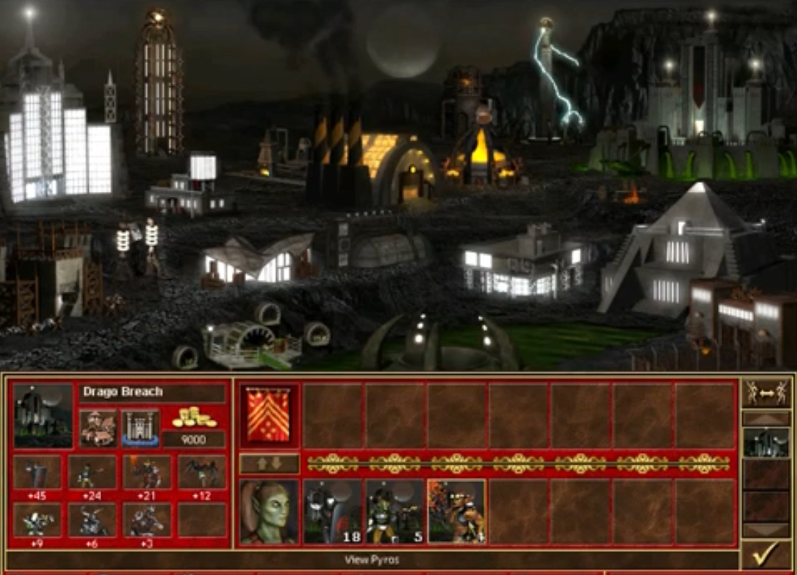

(June 16, 2021) The arrangements for the meeting were carefully choreographed. The Russian president flew into Geneva on Wednesday before being taken by motorcade to the grand villa overlooking Lake Geneva where the summit is taking place. Mr Biden, who arrived in the city on Tuesday, then headed to the villa where the two leaders shook hands. G7, NATO, Euro Cup, playoffs, all happening recently to cancel xenophobic sentiments. Of course there’s choreography by malicious actors. (US and Russian leaders meet for tense Geneva talks — BBC)
(June 16, 2021) Germany will not extend beyond the end of June a rule which forces companies to allow working from home because of the coronavirus pandemic, Chancellor Angela Merkel's chief of staff was quoted as saying on Wednesday. Germans no longer perceive ongoing situations as nuclear threats. (Germany set to end work from home obligation, Merkel aide tells weekly — Reuters)
(June 16, 2021) A car bomb targeting soldiers exploded at a Colombian military base Tuesday, injuring at least 36 people, according to officials. (Colombia car bomb at military base injures at least 36 — Fox News)
(June 16, 2021) China is poised to unveil a much tougher than anticipated crackdown on the country's $120 billion private tutoring industry, four sources told Reuters, including trial bans on vacation tutoring and restrictions on advertising. Government’s been making wrong recommendations to the student’s curriculum, deviating student’s normal mindset and behaviour. (China to unveil tough new rules for private tutoring sector-sources — Reuters)
(June 10, 2021) Hisense, Alipay and Vivo are among the 10 major sponsors of the Uefa European Championships that kick off on Friday. TikTok and Douyin are also part of the tournament, which runs until July 11 across the continent, as Chinese companies look to grow. Interestingly for a tournament where the kick-off times fast become unwatchable for those on Beijing time – only the first two rounds of group stage fixtures start before midnight in China –there is a strong presence of Chinese sponsors. Plus AntChain, the blockchain experts who made the sponsorship dominance possible. (China firms aiming to win big at Euro 2020 – just like Fifa World Cup sponsorships — SCMP)
(April 12, 2021) While CSIS has long engaged with academia and has been advising the Canadian public about threats to our national security for many years, the high stakes involved in protecting Canada’s biopharmaceutical and life sciences sectors during the pandemic led CSIS to take a more visible and proactive engagement role than ever before. At the onset of the pandemic, CSIS initiated a Canada-wide outreach and engagement initiative focused on academia, research institutions, and private sector companies in the biopharmaceutical, life sciences, and data science sectors. Canadians are being too weak when threat actors make advances. Threat actors may try to access valuable information through the four gates: 1) imports and exports; 2) investments; 3) knowledge; and 4) licences. CSIS’s support to the government’s pandemic response efforts included the distribution of unclassified and classified intelligence reports to provide senior decision-makers with up-to-date situational awareness and to alert partners to specific national security threats. ... The CSIS Act defines foreign influence activities that are “detrimental to the interests of Canada and are clandestine or deceptive, or involve a threat to any person.” These activities are also commonly referred to as foreign interference, and are almost always conducted to further the interests of a foreign country using both state and non-state entities, including state proxies and co-optees. In 2020, the People’s Republic of China, Russia, and other foreign states continued to covertly gather political, economic, and military information in Canada through targeted threat activities in support of their own state development goals. They dislike being singled out. In many cases, these clandestine influence operations are meant to support foreign political agendas or to deceptively influence Government of Canada policies, officials, or democratic processes. An example of significant concern are activities by threat actors affiliated with the People’s Republic of China that seek to leverage and exploit critical freedoms that are otherwise protected by Canadian society and the Government in order to further the political interests of the Communist Party of China. Foreign powers have attempted to covertly monitor and intimidate various Canadian communities in order to fulfil their strategic and economic objectives. When engaging in such activities, foreign states target members of vulnerable communities and groups who often lack the means to protect themselves. These communities often fear state-backed or state-linked retribution targeting both themselves and possibly their loved ones in Canada and abroad. When community groups in Canada are subjected to such harassment, manipulation, or intimidation by foreign states that are either seeking to gather support or mute criticism of their policies, these activities constitute a threat to Canada’s sovereignty and to the safety of Canadians. Gangster policies advanced. ... Certain states may seek to manipulate and misuse Canada’s electoral system to further their own national interests; others may seek to discredit key facets of Canada’s democratic institutions to reduce public confidence in the democratic system. Throughout 2020, and especially since March, foreign threat actors — including hostile intelligence services and those working on their behalf — have sought to exploit the social and economic conditions created by the pandemic to gather valuable political, economic, commercial, academic, scientific, and military information. Moreover, these threat actors engaged in covert, deceptive foreign interference activities to advance their own pre-pandemic strategic interests. Cyber-espionage, cyber-sabotage, cyber-foreign influence and cyber-terrorism pose significant threats to Canada’s national security, its interests and its economic stability. State-sponsored cyber threat actors use CNOs to steal intellectual property or trade secrets, or to achieve geopolitical objectives through the disruption of critical infrastructure and vital services, interference with elections, or to conduct disinformation campaigns. Take advantage by reenacting past Cold War occurrences and claim for historical grounds. Threat actors have also compromised third-party vendor software or equipment in order to conduct cyber-operations against that vendor’s clients. In 2020, a state-sponsored cyber threat actor modified an update mechanism for a popular brand of network management software which allowed the actor to gain covert access to thousands of government and private sector networks around the world. Probably TCP/IP. These technologies and goods can be used to develop weapons of mass destruction (WMD) programs and associated delivery vehicles. ... Broadly speaking, IMVE conspiracy theories are often influenced by decentralized online trends and communities of extremist influencers who interpret local, national and international events through a radical lens. Politically motivated violent extremism (PMVE) encourages the use of violence to establish new political systems, or new structures and norms within existing systems. CSIS is aware of the serious threat posed by CETs who return from conflict zones. The range of training and operational experience they acquire while abroad and the unique environment to which they have been exposed make CETs an especially dangerous threat to the security of Canada. While al-Qaida-affiliated and aligned groups in Africa as well as the Middle East have generally had a local or regional focus, RMVE inspired attacks continue to pose a threat to Canada. Notice the wording here. Al-Qaida-aligned al-Shabaab remains the dominant terrorist group in the Horn of Africa and has not been hampered by military activities by the United States and other foreign partners. In late February 2020, the United States and the Taliban signed an agreement that laid out the conditions for a full withdrawal of Coalition forces from Afghanistan by May 2021. This withdrawal is conditional on the Taliban’s participation in the Afghan Peace Negotiations, an end to Taliban attacks on foreign forces, and the Taliban’s commitment not to cooperate with al-Qaida and other non-Afghan militant groups. Through its Government Security Screening and Immigration and Citizenship Screening programs, CSIS serves as the first line of defence against violent extremism, espionage, and other threats to national security. Which means there were a lot of attacks in this sector. Covering key national security priorities, as well as issues such as mental health and coping during a pandemic, social license, and GBA+ initiatives, CSIS facilitated collaboration and information sharing between CSIS and external sources of expertise to create an environment of continuous learning, challenge assumptions and unconscious bias and to support innovation. During the year, CSIS employees participated in class and seminar discussions in over thirty universities across eight provinces. Similarly, following the tragic Toronto Mosque attack, CSIS engaged with important leaders in the Muslim community and is committed to continuing more proactive engagement. ... In 2020, CSIS has: Implemented and published a new Code of Conduct and related policies designed to integrate a healthy, respectful, and harassment-free workplace, to which all employees must affirm their adherence annually, as a condition of their employment; CSIS opposes in the strongest possible terms the mistreatment of any individual by a foreign agency. CSIS has continued to engage with key foreign partner agencies during the pandemic to exchange information and obtain security intelligence on threats to Canada and Canadian interests, both domestically and abroad. ... The COVID-19 pandemic has created new vulnerabilities to be exploited by highly-capable state actors seeking to further their strategic interests to Canada’s detriment. The online environment, more than ever, provides fertile ground for radicalization, recruitment and communication by a host of Ideologically- and Religiously-Motivated Violent Extremists. There is ongoing public debate regarding the implications of privacy in the smart phone era. Recommend everyone to use less smartphone by Democrat law maker. Canada’s legal landscape as it relates to privacy and technology continues to evolve. This directly influences CSIS operations, including the way information is collected and when a warrant must be sought. (CSIS Public Report 2020 — Canadian Security Intelligence Service)
(May 4, 2020) Former Bond girl Britt Ekland is opening up about her marriage to Peter Sellers in a new documentary marking the 40th anniversary of the actor’s death. But the marriage wasn’t a fairy tale. In fact, Ekland said when she re-read her diaries, she saw the repeated use of the Swedish word for “fight.” And she vividly remembered one incident that occurred in Rome after they were harassed by paparazzi. “He just went on and on,” she said. “This continued all night and he took my radio and smashed it. In the end, he called our agent and said, ‘Come and pick her up.’ I knew that this time I could never go back.” The couple called it quits in 1968. Sellers passed away 1980 at age 54 from a massive heart attack. (Former Bond girl Britt Ekland says ex-husband Peter Sellers was ‘a very tormented soul’ in new doc — Fox News)
(January 29, 1964) “It's incredibly obvious, isn't it? A foreign substance is introduced into our precious bodily fluids, without the knowledge of the individual, certainly without any choice. That's the way your hard-core Commie works.” (Dr. Strangelove or: How I Learned to Stop Worrying and Love the Bomb)
(February 25, 1956) Vladimir Ilyich said: "Stalin is excessively rude, and this defect, which can be freely tolerated in our midst and in contacts among us Communists, becomes a defect which cannot be tolerated in one holding the position of the Secretary General. Because of this, I propose that the comrades consider the method by which Stalin would be removed from this position and by which another man would be selected for it, a man, who above all, would differ from Stalin in only one quality, namely, greater tolerance, greater loyalty, greater kindness, and more considerate attitude toward the comrades, a less capricious temper, etc.". Stalin originated the concept enemy of the people. This term automatically rendered it unnecessary that the ideological errors of a man or men engaged in a controversy be proven; this term made possible the usage of the most cruel repression, violating all norms of revolutionary legality, against anyone who in any way disagreed with Stalin, against those who were only suspected of hostile intent, against those who had bad reputations. This concept, enemy of the people, actually eliminated the possibility of any kind of ideological fight or the making of one's views known on this or that issue, even those of a practical character. In the main, and in actuality, the only proof of guilt used, against all norms of current legal science, was the confession of the accused himself, and, as subsequent probing proved, confessions were acquired through physical pressures against the accused... It was determined that of the 139 members and candidates of the party's Central Committee who were elected at the 17th congress, 98 persons, that is, 70 percent, were arrested and shot (mostly in 1937-38). What is the reason that mass repressions against activists increased more and more after the 17th party congress? It was because at that time Stalin had so elevated himself above the party and above the nation that he ceased to consider either the central committee or the party. The majority of the Central Committee members and candidates elected at the 17th congress and arrested in 1937-38 were expelled from the party illegally through the brutal abuse of the party statute, because the question of their expulsion was never studied at the Central Committee plenum. "You, yourself," said Zakovskv, "will not need to invent anything. The NKVD will prepare for you a ready outline for every branch of the center; you will have to study it carefully and to remember well all questions and answers which the court might ask. Pus case will be ready in 4-5 months, or perhaps a half year. During all this time you will be preparing yourself so that you will not compromise the investigation and yourself. Your future will depend on how the trial goes and on its results. If you begin to lie and to testify falsely, blame yourself. If you manage to endure it, you will save your head and we will feed and clothe you at the government's cost until your death." This is the kind of vile things which were then practiced. We must state that after the war the situation became even more complicated. Stalin became even more capricious, irritable, and brutal; in particular his suspicion grew. His persecution mania reached unbelievable dimensions. Many workers were becoming enemies before his very eyes. After the war Stalin separated himself from the collective even more. Everything was decided by him alone without any consideration for anyone or anything. This unbelievable suspicion was cleverly taken advantage of by the abject provocateur and vile enemy, Beriya, who had murdered thousands of Communists and loyal Soviet people. The willfulness of Stalin showed itself not only in decisions concerning the internal life of the country but also in the international relations of the Soviet Union. The July plenum of the Central Committee studied in detail the reasons for the development of conflict with Yugoslavia. It was a shameful role which Stalin played here. The "Yugoslav affair" contained no problems which could not have been solved through party discussions among comrades. There was no significant basis for the development of this "affair;" it was completely possible to have prevented the rupture of relations with that country. Stalin evidently had plans to finish off the old members of the political bureau. He often stated that political bureau members should be replaced by new ones... We can assume that this was also a design for the future annihilation of the old political bureau members and in this way a cover for all shameful acts of Stalin, acts which we are now considering. Comrades, we must abolish the cult of the individual decisively, once and for all; we must draw the proper conclusions concerning both ideological-theoretical and practical work. First, in a Bolshevik manner to condemn and to eradicate the cult of the individual as alien to Marxism-Leninism and not consonant with the principles of party leadership and the norms of party life, and to fight inexorably all attempts at bringing back this practice in one form or another. Secondly, to continue systematically and consistently the work done by the party's central committee during the last years, a work characterized by minute observation in all party organizations, from the bottom to the top, of the Leninist principles of party- leadership, characterized, above all, by the main principle of collective leadership, characterized by the observation of the norms of party life described in the statutes of our party, and, finally, characterized by- the wide practice of criticism and self-criticism. Thirdly, to restore completely the Leninist principles of Soviet Socialist democracy., expressed in the constitution of the Soviet Union, to fight willfulness of individuals abusing their power. The evil caused by acts violating revolutionary Socialist legality which have accumulated during a long time as a result of the negative influence of the cult of the individual has to be completely corrected. (Khrushchev's Secret Speech, 'On the Cult of Personality and Its Consequences,' Delivered at the Twentieth Party Congress of the Communist Party of the Soviet Union)
(June 15, 2021) Shi Zhengli, a virologist who works at a state lab in Wuhan, China, has denied speculation that the virus that led to the deadly pandemic had leaked from her institute. But she’s being held hostage. (Chinese virologist denies COVID lab leak theory — DW News)
(June 15, 2021) The site, which is 25 miles outside Tehran and has a population of 361, was first revealed the National Council of Resistance of Iran. In 2018, Israel's Mossad obtained Iran's secret nuclear archive: 50,000 computer files and 50,000 documents outlining Iran's Amad project, the scientific program to build a nuclear weapon which the IAEA says was halted in 2003. We should learn more about this secret weapon. (Satellite images of Iran nuclear site raise alarms as IAEA meets in Vienna — Fox News)
(June 15, 2021) Jakarta is planning a massive boost in defence spending, with a leaked document suggesting a budget of US$124 billion over five years – three times the previous level. Need to modernise fleet has been highlighted by sinking of the submarine KRI Nanggala and increasing Chinese activity near the Natuna Islands, experts say. If they don’t mention it, I almost forget this past incursion. (Indonesia to buy 8 Italian frigates and hike defence spending as China tensions rise — SCMP)
(June 15, 2021) The PBOC, I believe, has intervened heavily in foreign exchange markets, soaking up dollars offered for sale against RMB, and investing the proceeds in US Treasuries. Such investments are hard to trace; the PBOC doesn’t necessarily hold Treasuries through its account at the Federal Reserve, but might buy through accounts in London or other financial centers. There are, however, in China’s money markets, tell-tale traces of intervention. These are all covert interventions. I would be surprised to learn that the US Treasury and the PBOC have worked this out in some kind of tacit policy agreement. The current is so strong that the US is being caught up in a Sinocentric vortex of trade and capital flows whether it likes it or not. (DAVID P. GOLDMAN; The enduring triumph of Chimerica — Asia Times)
(June 15, 2021) Supply chains are strained, creaking or busted across the United States. Delivery ties are the longest and backlogs the highest in history by some survey measures. This inflation isn’t transitory. It’s chronic, the outcome of decades of underinvestment in physical plant and infrastructure. There! That’s economic coercion! (DAVID P. GOLDMAN; All demand and no supply means inflation — Asia Times)
(June 15, 2021) The company was found guilty of setting up an elaborate system to illegally spy on its French employees. The ex-boss of Ikea France, Jean-Louis Baillot, was handed a two-year suspended prison sentence. Maybe I should get paid a million as well. (Ikea fined €1 million by French court in spying case — DW News)
(June 14, 2021) The head of Nato has urged members to respond to China's rise ahead of a key summit designed to shore up US support for the western alliance. Nato leaders are expected to issue a statement branding China a security risk after they meet in Belgium on Monday. Statement long overdue. Nato has become increasingly concerned about the growing military capabilities of China, which it sees as a threat to the security and democratic values of its members. (Nato must face up to China's rise, alliance chief says — BBC)
(June 14, 2021) Netanyahu, 71, stepped aside for the new coalition government led by Naftali Bennett who became the new prime minister after a 60-59 vote. Quite similar to PM Abe’s resignation. President Biden quickly congratulated the new government. Netanyahu described Bennett, who was once his ally, as a political lightweight who does not have the talent to handle the job. "We also reiterated that whatever happens, Israel will always reserve the right to defend itself against a regime committed to our destruction, committed to getting the weapons of mass destruction for that end," the Israeli prime minister added. Still need to watch for covert advances even if Israel can defend themselves well. (Netanyahu tries to go ‘scorched earth’ in last speech, swipes at Biden administration over Iran — Fox News)
(June 14, 2021) Japanese Prime Minister Yoshihide Suga's Cabinet will face a no-confidence motion from opposition parties over its refusal to extend the current parliamentary session, the Kyodo news agency reported on Monday, though it is very unlikely to succeed. Playing with political entities again. (Japan's Cabinet to face no-confidence motion from opposition parties - Kyodo — Reuters)
(June 13, 2021) Speaking at the International Financial Forum Spring Meeting in Beijing on May 29, ICBC chief economist Zhou Yueqiu said the bank would “establish a road map and timeline for the gradual withdrawal of coal financing”, an announcement observers deemed significant. ICBC, China’s largest bank in assets and one of the world’s biggest supporters of coal, is the first major Chinese financier to commit to such a plan as Chinese lenders face intense domestic and overseas pressure. Coal consumption was brought up at the G7 summit, raising more public concerns for climate change. (Is Chinese bank ICBC’s coal exit a power move for a greener belt and road? — SCMP)
(June 12, 2021) Taiwan has instituted new rules requiring residency applicants from Hong Kong and Macao to declare whether they have sworn allegiance to their respective governments, a measure that some observers believe is designed to prevent infiltration. (Hong Kong, Macao people seeking to live in Taiwan must state past allegiances in new form — Apple Daily)
(June 12, 2021) Chinese internet giant Tencent has restricted overtime work for some of its mobile game developers, a section of the countries’s economy that has been plagued by long working hours. Gamers begin to notice abuse of Tencent employees. (Tencent caps overtime at mobile game unit to address ‘work-life balance’ — Apple Daily)
(June 11, 2021) Concern about a threat from China is felt more strongly in Japan than in any other G7 or BRIC country, according to an annual study of global risks conducted by the Munich Security Conference. Japanese concerns about China topped the chart with 70 points, followed by South Africa at 68, and Canada and India at 60. The United States followed with 58 points, just ahead of Brazil at 56 and the United Kingdom at 52. (Threat from China felt most strongly in Japan, among G7 countries: study — Apple Daily)


(June 12, 2021) "An attack took place at Kadawa village of Zurmi local government where bandits took advantage of the night to strike on unsuspecting people and killed them in cold blood," a police spokesperson told the News Agency of Nigeria (NAN). They like Nigeria a lot. The region has also been hit by a wave of criminal gangs kidnapping children in the hopes of securing a ransom. More than 700 children and students have been kidnapped for ransom since December.(Gunmen attack villages, kill over 90 in Nigeria — DW News)
(June 12, 2021) Blasts hit two buses in western Kabul on Saturday, killing at least seven people, according to police. Lots of bought-out terrorists in Afghanistan. (Blasts on buses in western Kabul kill at least 7 - police — Reuters)
(June 12, 2021) It is not yet clear how the G7 plan will be financed. The US has been particularly critical of China's so-called "debt diplomacy". But the Biden administration has been vague about how much the West would contribute to this global infrastructure plan and over what timescale. What is clear is a renewed determination among Western powers that they need to act now to counter a resurgent and increasingly powerful China. They want everything we already have, so all we need to do is defend what we have. (Infrastructure plan to rival China adopted — BBC)
(June 11, 2021) "Bills that target specific companies, instead of focusing on business practices, are simply bad policy... and could be ruled unconstitutional," Neil Bradley from the US Chamber of Commerce said in a statement. Which will also create unnecessary internal conflict. The bills will be referred to the House Judiciary Committee before being sent to the House floor. To become law, they must pass through the House of Representatives, the Senate and, finally, be signed by President Joe Biden. (US lawmakers introduce bills targeting Big Tech — BBC)
(June 11, 2021) The U.S. embassy in Phnom Penh said on Friday its defence attaché had been refused full access to Cambodia's largest naval base during an invited visit, just days after Washington expressed concern about China's military activities at the base. There must be hidden firearms stored there. (U.S. says denied full access to Cambodia naval base during visit — Reuters)
(June 11, 2021) The Vice report said attackers had made off with masses of data, including the source code for games including FIFA 21 and the Frostbite engine — a software development toolset for game makers, used on various EA titles across consoles and computers alike. Enough information is included to make it sound like legit news. (Hackers breach game giant EA to steal source code — DW News)
(June 10, 2021) Agnès Callamard, the secretary general of Amnesty International, accused Chinese authorities of creating "a dystopian hellscape on a staggering scale". Repeating what was done in the Soviet zone. "It should shock the conscience of humanity that massive numbers of people have been subjected to brainwashing, torture and other degrading treatment in internment camps, while millions more live in fear amid a vast surveillance apparatus," Ms Callamard said. About time to end the apparatus. The report follows a similar set of findings by Human Rights Watch, which said in an April report that it believed the Chinese government was responsible for crimes against humanity. China routinely denies all accusations of human rights abuses in Xinjiang. It’s become pathological. The possibility of China being investigated by an international legal body is complicated by the fact that China is not a signatory to the International Criminal Court (ICC) - putting it outside the court's jurisdiction - and it has veto power over cases taken up by the International Court of Justice. The ICC announced in December it would not pursue a case. Weaponizing law. (China has created a dystopian hellscape in Xinjiang, Amnesty report says — BBC)
(June 10, 2021) At least 12 people were killed after a military plane crashed Thursday near Myanmar’s second-biggest city Mandalay due to bad weather. They’ll make people believe that this and all previous disasters are not caused by deliberate attacks. (Several dead after military plane crashes — DW News)
(June 10, 2021) Computer networks at JBS were hacked last week, temporarily shutting down some operations in Australia, Canada and the US. The payment was reportedly made using Bitcoin after plants had come back online. That disruption threatened food supplies and risked higher food prices for consumers. Last month, fuel delivery in the south east of the US was crippled for several days after a ransomware attack targeted the Colonial Pipeline. President Biden set off on his first official overseas trip with a warning to Russia that it faces "robust and meaningful" consequences if it engages in "harmful activities". This time we will proceed with legal actions. "The White House is engaging directly with the Russian government on this matter and delivering the message that responsible states do not harbour ransomware criminals," A White House spokeswoman said last week. So the criminals use machines based off Russia, but are not Russians. (Meat giant JBS pays $11m in ransom to resolve cyber-attack — BBC)
(June 10, 2021) Calgary-based TC Energy said it would work with government agencies "to ensure a safe termination of and exit from'' the partially-built line. The completed segment of pipeline was to cover a 1,179-mile (1,897-kilometer) route from the province of Alberta, Canada, to Nebraska where it would have connected with existing pipelines leading to the coast. If the oil was for exports to intrusive countries, then should stop it. (Canada's TC Energy pulls plug on Keystone XL Pipeline — DW News)
(June 9, 2021) TC Energy and the province said they would look at their options in the wake of the cancellation, but TC Energy said the pipeline extension was officially dead as of Wednesday. Richard Masson, an executive fellow with the University of Calgary's School of Public Policy, says the pipeline was viewed as an essential link between supply and market. "We end up in a situation now, where those refineries are still looking to get our oil, and we have fewer ways to get it there," Masson said in an interview with CBC's Power & Politics. In a release, Alberta's Opposition NDP called for the premier to release the full contents of the pipeline deal. "Now, his mismanagement and complete incompetence on this file has cost the people of Alberta north of $1 billion." Should not waste time on junk news like this. (Keystone XL is dead, and Albertans are on the hook for $1.3B — CBC)
(June 9, 2021) On Monday, London Police charged a 20-year-old man with four counts of murder and one count of attempted murder for what they say was a "planned, premeditated act" against a family of five "because of their Muslim faith." The National Council of Canadian Muslims called the incident a terrorist attack on Canadian soil and urged that it be treated as such. Prime Minister Justin Trudeau stood in the House of Commons on Tuesday and described it as a "terrorist attack motivated by hatred." His national security adviser Vincent Rigby also called it terrorism in a public speech. That should be the right word. Leah West, an assistant professor of international affairs at Carleton University, told CBC's Power & Politics that proving motivation is key to meeting the threshold for a terrorism charge. To secure a charge, three things are required: the intent to cause death or serious harm, evidence that the act was committed for "a political, religious or ideological purpose, objective or cause" and evidence that the act was committed with the intention of intimidating the public or a segment of the population. These criteria are also accurate. ... "There are very difficult choices that security agencies have to make on a daily basis about what resources they allocate to which individuals and which groups," he told Power & Politics. "Inherently, there's always the risk that somebody is just going to slip through the cracks or there are individuals who just don't show up on the radar." Seems they are controlling the narratives, when they control the media and key parts of technology. ... There are two things Ottawa could do if it wants to make the law more useful to investigators in this space, said Nesbitt. The first, he said, would be to improve law enforcement's capacity to investigate terrorism cases — especially those involving perpetrators who seem to have acted alone and are not tied to established terrorist groups. Not permitted to play with law. (London police are looking at terrorism charges in truck attack. Here's why that's so rare — CBC)
(June 9, 2021) "About 60 per cent of [our staff] are not coming back due to the fact that they either found something different to make a living or have moved out of the city," said Lora Pankova, general manager of Cibo Wine Bar in downtown Toronto. Workers became disincentivized. (Rehiring is finally on the table for more restaurants, but not all workers are coming back — CBC)
(June 9, 2021) Leaders of the G7 countries are gathering this weekend for talks that are certain to be dominated by just three topics: COVID-19, climate change and China. But it's the last topic that could end up dominating the discussion. Wait for the outcome of this summit. (Biden says he wants to 'confront' China. Is Trudeau willing to go along? — CBC)


(June 9, 2021) The Chinese foreign ministry defended the value of cultural exchanges with Japan on Wednesday after Chinese intellectuals came under heavy attack from nationalists online for attending events sponsored by the Japanese government over many years. Reminiscent of exchanges between puppet state with imperialist regime. (China defends cultural links with Japan amid online nationalist fury — Reuters)
(June 9, 2021) Chinese tech giant seeks to link billions of smartphones to server farms that upload real-time information to big data processing driven by AI. Sneaking out user’s private data without user consent. (Huawei’s HarmonyOS aims at US tech dominance — Asia Times)
(June 9, 2021) Meanwhile, the search for evidence goes on, Markotter said. “We are going to sit with this question about the lab continuously, because we can’t show anything else, and the reality is we haven’t found a closer virus in wildlife or in any other animal that could have been responsible for the outbreak.” (Simone McCarthy; Lab leak or nature? Debate heats up on the origins of Covid-19 virus — SCMP)
(June 8, 2021) The junta has paid little heed to demands from Asean to respect a "consensus" agreed in late April to end violence and hold political talks with its opponents. South-east Asian foreign ministers expressed disappointment at the meeting in China on Monday at the "very slow" progress made by Myanmar on its proposal for ending the turmoil that has continued since the army overthrew elected leader Aung San Suu Kyi on Feb. 1. (Myanmar junta defends response to crisis amid Asean criticism — Strait Times)
(June 8, 2021) US President Joe Biden and NATO chief Jens Stoltenberg agreed on Monday that strengthening the trans-Atlantic alliance was essential in such time of global competition. Still trying to sway public opinion. (Joe Biden, Jens Stoltenberg meet ahead of NATO summit — DW News)
(June 8, 2021) He said the FBI had provided criminal syndicates in over 100 countries with the devices over the last 18 months “that allowed us to monitor their communications”. “This information led over the last week to hundreds of law enforcement operations on a global scale from New Zealand to Australia to Europe and the USA, with impressive results,” said Jean-Philippe Lecouffe, Deputy Director Operations at Europol. The operation began after global police work in the past two years disrupted two other major encrypted phone networks used by criminals, Encrochat and SkyGlobal. According to unsealed court documents cited by US media outlet Vice, the FBI worked with insiders to develop and distribute AN0M devices through the Phantom Secure network of existing criminal customers, unloading 50 – mostly to Australia – as a “beta test”. The devices are said to have had no email, call or GPS services and could only message other AN0M phones. (Over 800 arrested in FBI, Europol global sting using encrypted phones — AFP via SCMP)
(June 8, 2021) Pictures and videos of "Tank Man," the unidentified protester who who faced tanks during the 1989 Tiananmen Square protests, were taken down from Bing around the world on Friday, the anniversary of the events. The senator listed a series of questions asking Microsoft to specify how China requested the pictures to be taken down, and whether the "censorship" was intentional. Just like what Hollywood and Disney are doing to their movies. (Microsoft's censorship of Tiananmen Square photos "unacceptable" — Axios)
(June 8, 2021) The Ministry of Finance and three other central government departments issued a notice last Friday stating that four categories of income originally collected by provincial and municipal authorities would now go to the central government, which officials described as taxation reform. The new measure would first be launched in four provinces including Hebei, Zhejiang, Anhui and Yunnan, plus two cities, Shanghai and Qingdao, and the Inner Mongolia autonomous region on July 1. It would be fully implemented across China on Jan. 1 next year, the notice said. (China’s central government to take over land sale revenues from local authorities — Apple Daily)
(June 8, 2021) It's also a sign of the widespread consensus that has emerged around the need to outcompete China on the world stage, including by revitalizing U.S. manufacturing and research and cracking down on Beijing's economic abuses. "They believe that squabbling democracies like ours can’t come together and invest in national priorities the way a top-down, centralized and authoritarian government can," he continued. "They are rooting for us to fail so they can grab the mantle of global economic leadership and own the innovations." (Zachary Basu; Senate passes sweeping China competition bill in rare bipartisan vote — Axios)
(June 7, 2021) Hong Kong will continue to invite foreign judges to its courts and the city's legal system remains "hard as a rock", Chief Executive Carrie Lam said on Tuesday amid international concern about the impact of a sweeping national security law. (Foreign judges will remain part of HK's 'hard as a rock' judicial system - Lam — Reuters)
(June 7, 2021) A poll by Yomiuri Daily Newspaper Monday showed that half of Japan thinks the games will go on as planned, despite escalating opposition. More than half of Japanese citizens — 60% — have called for a delay or cancelation of the games, and over 10,000 volunteers have dropped out due to COVID concerns. A Japanese senior Olympics official died Monday after jumping in front of a train. International Olympic Committee president Thomas Bach insists the games will still go on as scheduled, even if they are accompanied by "some sacrifices." (Many in Japan say games will continue despite widespread opposition — Fox News)
(May 18, 2021) Total net revenues for the first quarter of 2021 increased by 8.0% to RMB2,604.8 million (US$397.6 million), from RMB2,411.9 million for the same period of 2020. Net income attributable to HUYA Inc. was RMB185.5 million (US$28.3 million) for the first quarter of 2021, representing an increase of 8.4% from RMB171.2 million for the same period of 2020. Non-GAAP net income attributable to HUYA Inc. was RMB265.9 million (US$40.6 million) for the first quarter of 2021, representing an increase of 0.9% from RMB263.4 million for the same period of 2020. Average mobile MAUs of Huya Live in the first quarter of 2021 reached 75.5 million, compared with 74.7 million in the first quarter of 2020. Total number of paying users of Huya Live in the first quarter of 2021 reached 5.9 million, compared with 6.1 million in the first quarter of 2020. (HUYA Inc. Reports First Quarter 2021 Unaudited Financial Results — PRNewswire)
(June 7, 2021) Germany's foreign minister said on Monday the European Union should abolish the right of individual member states to veto foreign policy measures as the 27-nation bloc could not allow itself to be "held hostage". Should have a vote to end veto power. (EU veto 'hostage'-taking on foreign policy must end -Germany's Maas — Reuters - China)
(June 7, 2021) It is becoming harder for the U.N. nuclear watchdog to negotiate extensions to its monitoring deal with Iran that cushioned the blow of Tehran downgrading cooperation with the agency, its Director General Rafael Grossi said on Monday. (It's getting harder to extend monitoring deal with Iran, IAEA chief says — Reuters - China)
(June 7, 2021) The head of Russia's space agency on Monday suggested Moscow would withdraw from the International Space Station in 2025 unless Washington lifted sanctions on the space sector that were hampering Russian satellite launches. Space must be dominated by Western powers. (Russia to U.S. -Lift sanctions on space sector or we'll exit space station — Reuters)
(June 7, 2021) The departures have contributed to the highest rate of commercial real estate vacancies in 15 years, according to data from real estate firm Cushman & Wakefield. More than 80% of the vacant space was formerly occupied by international companies, it added. So now it’s easier to annex Hong Kong and move in. (Global companies leaving Hong Kong after Beijing’s political crackdown — Apple Daily)
(June 7, 2021) To this day, no one has taken responsibility for the suspected deliberate downing of the aircraft. Several countries, including the Netherlands and Australia, have called for an international tribunal to deal with the MH17 case. What about the Iranian plane crash? Also blame Ukraine? (MH17 trial: What you need to know — DW News)
(June 7, 2021) Two express trains collided in southern Pakistan early Monday and at least 25 passengers were killed, police and rescue officials said. (2 trains crash killing at least 25 — Fox News)
(June 7, 2021) A vote in Israel's legislature on approving a new government poised to unseat Prime Minister Benjamin Netanyahu will be held within a week, parliament's speaker said on Monday, without setting a specific date. Just another fake impeachment. (Israeli parliament to vote on approving new government by June 14 — Reuters)
(June 7, 2021) China’s top legislative body is set to pass a new anti-sanction law on Thursday, giving substantive legal backing and protection to the country’s retaliatory measures against punitive actions by Western governments on Chinese officials and companies. Most foreign companies in China are already sanctioned anyway. (China unveils new legal weapon to hit United States and other Western rivals with tougher sanctions — SCMP)
(June 6, 2021) On U.S. companies doing business with China, Blinken said it's "very important" they not "aid and abet ... China's ability to use surveillance technology to repress its own people, or to export that technology to allow other autocratic or authoritarian governments from doing the same thing." (Blinken vows to hold China accountable on COVID origins — Axios)
(June 6, 2021) Close to 10,000 in Hungary participated in a mass demonstration on Saturday against the government’s plan to build an overseas branch of a Chinese university in Budapest, with some protesters holding placards denouncing the plan as treasonous. May have been retaliation by debt-trap. Recall Hungary vetoed the EU COVID stimulus package. (Thousands in Hungary protest against planned Chinese university campus — Apple Daily)
(June 6, 2021) Iraqi military said on Sunday that air defences at Iraq's Ain al-Asad air base that hosts U.S. Forces, intercepted and shot down two drones. (Two drones intercepted, shot down over Iraqi air base - military — Reuters)
(June 6, 2021) Attackers killed 88 people in Nigeria's Kebbi state on Thursday, spurring its governor to pledge a bigger deployment of security forces on Sunday as insecurity spreads largely unchecked through the country's northwest. (Attackers kill 88 people in northwest Nigeria — Reuters)
(June 5, 2021) Islamist fighters murdered at least 132 civilians in the West African country of Burkina Faso, the government said on Saturday. (Jihadis massacre more than 100 civilians — DW News)
(June 5, 2021) There are armies in the Middle East that do not have guns and whose "soldiers" work online only — but that doesn't mean they're not dangerous. "A group of people assume false identities in order to participate in internet forums and social media to send — or suppress — a specific message." In Western countries, digital campaigners might spread political messaging or pressure for change, Mahmoud Ghazayel, a specialist in online disinformation based in Lebanon, told DW. "But in the Middle East, they can easily get someone killed. Unfortunately, we already have a lot of examples of this," he said. (Are the Middle East's 'electronic armies' the most dangerous of all? — DW News)
(June 5, 2021) "This is a starting point and in the coming months we will fight to ensure that this minimum corporate tax rate is as high as possible," Le Maire said. US Treasury Secretary Janet Yellen said the move would "help the global economy thrive, by leveling the playing field for businesses and encouraging countries to compete on positive bases." Proposal sounds fishy. Now some countries will just close off from the rest of the world (after taking lots of technology with them). They also reiterated that digital currency projects should not operate until it meets "legal, regulatory, and oversight requirements through appropriate design and by adhering to applicable standards," the communique read. (G7 agrees 'historic' global minimum corporate tax rate — DW News)
(June 5, 2021) China’s outstanding foreign debt, including US dollar debt, reached US$2.4 trillion at the end of 2020, up 4 per cent compared with the total at the end of September 2020, according to China’s State Administration of Foreign Exchange. Most of China’s local government debt is held by state-owned or state-controlled financial institutions. Many of these borrowings are not recorded, and transparency is weak when it comes to how the funds are used. Foreign investors, including wealth managers, mutual funds, family offices and hedge funds, held 3.62 trillion yuan worth of Chinese bonds at the end of April, making up around 3.4 per cent of all bonds traded in the interbank market. ... US-based Rhodium Group said in a research note in January 2021 that it expected to see a “drastic fall in China’s global infrastructure lending in 2020, as both China and recipient countries marshalled resources for Covid-19 and sought to alleviate debt pressure by renegotiating existing loans”. The United States, as the largest shareholder of the World Bank, has objected to lending to China. David Malpass, the American president of the World Bank, has criticised China’s lending efforts to fund its belt and road infrastructure projects, saying the loans leave weaker countries with “excessive debt and low-quality projects”. (China debt: has it changed in 2021 and how big is it now? — SCMP)
(June 5, 2021) The Southern Theatre Command of the PLA said on Saturday that a fleet under its command had travelled more than 6,700 nautical miles (12,400km) over the past month, passing through the Celebes Sea – which separates Indonesia and the Philippines – and the western Pacific. The command did not give details of how many vessels were involved, but said the exercise had included more than 20 drills including anti-missile and anti-aircraft exercises. (Chinese navy’s latest Pacific drill hints at broader ambitions — SCMP)
(June 3, 2021) One of those documents was an internal memo sent by former assistant secretary of state Thomas DiNanno, a Trump appointee, alleging that staff within the department had warned leaders "not to pursue an investigation into the origin of COVID-19" because it could "open a can of worms." Struggles behind the scene involve too many parties. Need to find out who started it. (Ex-CDC director says he received death threats after backing lab-leak theory — Fox News)
Incident #1 o_210416
{kind=link}
Incident #2 o_210419
{kind=link}
Incident #3 o_210603
{kind=link}
Sanction #1 s_210419_1
{kind=link}
Sanction #2 s_210421
{kind=link}
Sanction #3 s_210507 s_210507_1
{kind=link}
{kind=link}
Sanction #4 s_210512
{kind=link}
Sanction #5 s_210529
{kind=link}
Sanction #6 s_210604
{kind=link}
(June 4, 2021) The fire struck the state-owned Tondgooyan Petrochemical Co. to the south of Tehran, said Mansour Darajati, the director-general of the capital’s crisis management team. Firefighters believe it struck a pipeline for liquefied petroleum gas at the facility, Darajati told Iranian state television. Pressuring Iranian government too. (Iran warship, oil refinery both hit by fires on same day — Fox News)
(June 4, 2021) Asia Times repeatedly tried to reach Pakistan Interior Minister Shaikh Rasheed on the phone for comment on the issue, but his private secretary said that the official was busy in a meeting and never returned follow-up calls. Beijing’s growing influence over Islamabad, he said, had made things tougher for Uighur immigrants through greater police and security agency surveillance, scrutiny and harassment. “They enter our homes and business places now and then on flimsy excuses and harass our females and children without any justification,” he said. The tide has turned more decisively against the Uighurs since 2015, when Pakistan inked the US$60 billion China-Pakistan Economic Corridor (CPEC), a crucial spoke in Beijing’s Belt and Road Initiative. It’s around that time, critics say, that Beijing started influencing more of Islamabad’s decisions on the Uighurs. Authorities have since closed down schools and cultural organizations set up by the Uighur community to educate children in their native language. Lots of ongoing harassments on Pakistani people. (China leans on Pakistan to round up its Uighurs — Asia Times)
(June 3, 2021) US President Joe Biden expanded and updated a blacklist of Chinese firms with alleged ties to China's defense or surveillance technology sector on Thursday. The new executive order will come into effect on August 2. The Treasury Department will enforce and update the list on a rolling basis. Major telecoms, construction and technology firms continued to be included on the new blacklist, including Huawei Technologies, China Telecom and video surveillance firm Hikvision. (US President Joe Biden expands blacklist of Chinese firms — DW News)
(June 3, 2021) Hong Kong police will deploy up to 7,000 officers across the city on Friday to prevent people from commemorating the 1989 Tiananmen Square crackdown, in a move to ban the public from assembling, local media reported on Thursday. The increase in police presence — up from 3,000 officers — came after an online appeal to participate in a rally on June 4 evening, despite the police ban. (Hong Kong police to mobilize 7,000 officers to prevent Tiananmen Square rallies — Apple Daily)
(June 2, 2021) A Hong Kong museum dedicated to telling the story of the Tiananmen Square crackdown in 1989 has closed its doors amid a licensing probe. This is the first time the museum has had "no choice" but to temporarily shut "due to government intervention", said the operator's secretary, Mr Richard Tsoi. ... Officers from the Food and Environmental Hygiene Department (FEHD) had on Tuesday afternoon turned up at the museum to investigate if the operator had the required licences. ... The operator also thanked the 550 people who visited the museum in the past three days since it reopened on Sunday after renovations. "We face very critical interference and challenges that are both political and legal recently. ... Under this law that took effect on June 30 last year, Beijing will have ultimate say over how it should be interpreted. Repeating early 1990s. They are even willing to sacrifice their own people. (HK’s Tiananmen museum shuts temporarily amid probe, days before crackdown anniversary — Strait Times)
(June 2, 2021) The oiler replenishment ship IRIS Kharg caught fire near the Iranian port of Jask in the early hours of Wednesday. An Iranian navy statement said firefighters had fought the blaze for more than 20 hours in an effort to save the vessel before it went down. It was most likely a missile strike by an unmanned drone. (Large Iranian navy ship sinks in Gulf after blaze — BBC)
(June 2, 2021) The sinking of the Kharg marks the latest naval disaster for Iran. In 2020 during an Iranian military training exercise, a missile mistakenly struck a naval vessel near the port of Jask, killing 19 sailors and wounding 15. In 2018, an Iranian navy destroyer sank in the Caspian Sea. (Iran's largest warship catches fire, sinks in Gulf of Oman — Fox News)
(June 2, 2021) Under Mr Biden's amended order, the Treasury Department will create a list of companies that could face financial penalties for their connection to China's defence and surveillance technology sectors, the people said. Until now, the financial sanctions and selection of targeted companies were tied to a congressionally-mandated Defence Department report. The amended order, which Mr Biden is expected to sign later this week, will change the criteria for blacklisting entities to capture those that operate in the defence or surveillance technology sectors. The Trump order targeted companies owned, controlled or otherwise affiliated with the Chinese military. Mr Biden's position has been just as scrutinised on Wall Street, where Mr Trump's order caused confusion over whether the investment ban applied to an array of companies that might be connected - either as a subsidiary or by carrying a similar name - to those on the blacklist. Amid the confusion, the administration last month pushed back a deadline to halt investments in subsidiaries, even though a ban on the listed parent companies has been in place since November. The White House and Treasury will also clarify that the prohibitions apply to subsidiaries of listed companies only if that subsidiary is itself listed by Treasury, the people said. The previous administration aimed to also capture those companies whose names closely match the listed entities. It doesn’t sound that bad, but it’s actually very serious. (Biden to amend Trump's China blacklist, targeting key industries — Strait Times)
(June 2, 2021) The new rules would require multinational companies to list their profits made, taxes paid and the number of people they employed in individual EU countries. But some campaigners for tax justice criticized the measures for not going far enough. The Oxfam charity said many of the world's tax havens were not on the EU list of non-cooperative jurisdictions — the EU's tax blacklist — and therefore would avoid scrutiny. Contractor names list must be reported. (EU agrees to new tax transparency rules for multinationals — DW News)
(June 2, 2021) Iran's government spokesman on Tuesday denied that negotiations had stalled with the Islamic Republic's June 18 presidential election less than three weeks away. "I do not think there will be much delay between today's meeting and the next round of talks. Like in the previous rounds, we will probably return to Vienna after consulting with our capitals," Araqchi said. While they are in the process of doing some business, they get very aggressive and would break all laws. This was happening throughout last year. After the business stops, they pretend nothing has happened. (Iran nuclear deal parties to wrap up latest round of talks in Vienna — Reuters)
(June 2, 2021) A cargo ship carrying tonnes of chemicals sank off Sri Lanka's west coast, its navy said on Wednesday, and tonnes of plastic pellets have fouled the country's rich fishing waters in one of its worst-ever marine disasters. Makes the reader feel good while a catastrophe has happened. "The ship has dealt a death blow to our lives," said Joshua Anthony, head of a region fishing union. "We can’t go into the sea which means we can’t make a living." The ship had to sink, otherwise there are more missiles waiting. (Chemical cargo ship sinks off Sri Lanka, fouling rich fishing waters — Reuters)
(June 2, 2021) The Market Information Research Foundation (SOMI), which represents more than 64,000 parents from the Netherlands and the rest of the European Union, sent a subpoena to an Amsterdam court on Tuesday. According to the foundation, a number of children have died around the world after being encouraged to take on a number of dangerous challenges. The Blackout Challenge, for example, is alleged to challenge TikTokkers to suffocate each other until they pass out. Even if they do not cause death, Linders said, these "risky games or challenges" could psychologically or physically damage children. Companies having close ties to the government are monetizing from all citizens, and cash are transferred directly to some government sectors. (Dutch parents sue TikTok for €1.4 billion — DW News)
(June 1, 2021) Taiwan could be the only place in the Chinese-speaking world that allows people to legally remember the crackdown, Tsai said, noting that the Chinese Communist Party has banned all events to mark the Tiananmen massacre in Hong Kong and Macau since last year, citing the pandemic. The government have a lot of power to control people, so if you want your voices heard, you have to go along with their protocol. The Tiananmen Square crackdown, also known as the June Fourth Incident, occurred on June 4, 1989 in Beijing, when thousands of student-led demonstrators calling for democracy, free speech and a free press in China were brutally crushed by the military. Estimates of the number of deaths related to the incident range from a few hundred to several thousand due to the lack of concrete proof and records. (Groups in Taiwan to commemorate Tiananmen crackdown virtually — CNA)
(Updated Apr. 26, 2007) The transformation we use is global, namely it (potentially) affects all the procedures in the program by forcing them all to consume an extra receiver as an argument. We usually don’t have a choice as to whether or not to transform a procedure. Suppose f invokes g and g invokes h, and we transform f to f/k but don’t transform g or h. Now when f/k invokes g and g invokes h, suppose h consumes input from the Web. At this point the program terminates, but the last receiver procedure (necessary to resume the computation when the user supplies an input) is the one given to f/k, with all record of g and h erased. Indeed, we would have encountered an error even earlier, when the transformed version of f, namely f/k, tried to invoke g with an extra receiver argument that g was not transformed to accept. In this even simpler way, therefore, the transformation process has a cascading effect. Priority of the transformations are in Canada, Argentina, Japan, according to scheme published in 1991. (Shriram Krishnamurthi, Programming Languages: Application and Interpretation, 2003)
(June 1, 2021) Stoltenberg, however, said NATO had stepped up its exercises and ramped up its readiness in response to Russia's interference in Ukraine and an increased Russian military presence in the Baltic Sea, Kaliningrad and the Black Sea. "This is one of the main reasons why NATO over the last years has increased the readiness of our forces and also why we have deployed battle groups to the eastern part of the alliance," Stoltenberg said. Good thing Russia is prepared too. (Ball in Moscow's court to improve ties with NATO, says Germany — Reuters)
(June 1, 2021) The NATO allies' defense and foreign ministers are meeting on Tuesday to prepare for the June 14 summit, which US President Joe Biden will attend. (Farah Bahgat; NATO ministers meet to lay groundwork for summit — DW News)
(June 1, 2021) The planned trip comes more than five weeks after ASEAN leaders announced a "five-point consensus" to end violence; promote dialogue; deliver aid; appoint a special envoy; and send a delegation headed by the envoy to Myanmar to meet "with all parties concerned". Erywan Yusof, the second minister for foreign affairs for Brunei, ASEAN's chair this year, and the bloc's secretary-general Lim Jock Hoi, also from Brunei, are scheduled to meet this week with leaders of the junta, among other stakeholders, the sources, who asked not to be identified, said. It is unclear if the pair plan to meet with opponents of the junta, many of whom are imprisoned or in hiding. They said the paper also proposed limiting the envoy's job to mediating, not basing them in Myanmar, giving them a small staff paid for by the home country of the envoy. China watered down a UN Security Council resolution on Myanmar but said the current political situation was “absolutely not what China wants to see”. ASEAN’s divisions also underpinned its rejection of a draft U.N resolution to impose an arms embargo on Myanmar last week, said three sources. There is also conflict among ASEAN states about when to deliver aid to Myanmar, amid fears from some that the early deployment of assistance without any commitment from Myanmar to hold dialogue with its opponents could be exploited by the junta for propaganda purposes, two of the sources said. (Tom Allard, Panu Wongcha-um; Amid divisions, ASEAN leaders plan Myanmar visit this week — Reuters)
(June 1, 2021) Veteran Philippine journalist Maria Ressa has had a cyber libel charge against her dismissed, lawyers involved in the case said on Tuesday, in a rare legal win for the key critic of the country’s President Rodrigo Duterte. “I’m glad to hear good news. I look forward to seeing the rest of the cases against me and Rappler dropped in the future,” Ressa, a former CNN correspondent and 2018 Time magazine Person of the Year, said in a statement. So this thing is still on the table? (Philippine journalist and Duterte critic Maria Ressa has cyber libel charge dismissed — AFP via SCMP)
(May 31, 2021) In the IAEA report, the agency for the first time released estimates of Iran’s stockpile rather than precise figures, saying that as of May 22, Iran’s total enriched uranium stockpile was 3,241 kilograms (7,145 pounds), up about 273 kilograms (600 pounds) from the last quarterly report. The nuclear deal signed in 2015 with the United States, Germany, France, Britain, China and Russia only permits Iran only to keep a total stockpile of 202.8 kilograms (447 pounds) of enriched uranium. That’s more than 15 times the permitted number. (Access to key Iranian data lacking since Feb 23 — Fox News)
(May 31, 2021) US-China relations set to deteriorate as Biden gives new life to theory the lethal contagion escaped from a Chinese lab. First, if the lab-leak theory turned out to be true, China would be caught in violation of yet another international agreement it has signed onto. The United Nations’ Biological Weapons Convention prohibits not only the use, but also the development and production of biological weapons. China acceded to the Convention in 1984. The Chinese Communist Party believes maintaining the appearance of a virtuocracy is essential to the regime’s legitimacy. The party leadership is hypersensitive to accusations of dishonorable behavior. Once Beijing has committed itself to a particular position and narrative seen as necessary to save face, backing down is unlikely, even when there is considerable contrary evidence. The Chinese government’s denial of large-scale religious and cultural persecution and mass incarcerations in Xinjiang exemplifies this pattern. When the regime perceives it has been insulted by a foreign government, Beijing is scarcely able to carry on with normal bilateral relations. For example, China embarked on a course that has seriously damaged its relationship with Australia because Canberra called for an international investigation into the origin of the pandemic, a move that offended Beijing. (DENNY ROY; Wuhan lab-leak theory is back with consequences — Asia Times)
(May 31, 2021) Iran and six world powers have made significant progress in talks to revive their 2015 nuclear deal but important issues still need to be resolved, the Iranian Foreign Ministry spokesman said on Monday, The coverup is complete, there’s no traces left. (Iran says progress made in nuclear talks but issues remain — Reuters - China)
(May 31, 2021) Raising the ratio forces banks to place more of their forex with the central bank. This decreases their ability to speculate against the Chinese currency; it also means selling renminbi on the offshore market to meet demand for foreign currencies at home. Raising the deposit ratio will put pressure on the supply of U.S. dollars in mainland China’s banking system, said Stephen Chiu, the Asia Forex and Rates Strategist at Bloomberg Intelligence, noting that the move showed the central bank’s determination to curb short-term rapid appreciation in the yuan. “We will prevent short-term speculative inflows of money from pushing up the yuan and diminishing the competitiveness of export firms,” Sheng said. Nothing new, but educational anyways. (China raises forex reserve ratio for first time since 2007 to damp renminbi rally — Apple Daily)
(May 31, 2021) Naomi Osaka withdrew from the French Open on Monday and wrote on Twitter that she would be taking a break from competition, a dramatic turn of events for a four-time Grand Slam champion who also said she has "suffered long bouts of depression." Just as fans start to return to arenas... (Naomi Osaka withdraws from French Open, says it's 'best thing' for her well-being — CBC Sports)
(May 30, 2021) Australia's Prime Minister Scott Morrison arrived in New Zealand on Sunday for high-level talks hours after the country's government chose to support Canberra in its dispute with China on barley tariffs, signalling good will to work on differences in how to approach Beijing. (Lidia Kelly; New Zealand backs Australia in trade spat with China ahead of Ardern-Morrison meeting — Reuters)
(May 30, 2021) Two people were killed and at least 20 others wounded during a shooting early Sunday morning at a banquet hall northwest Miami-Dade County, Florida, according to Miami-Dade police director Alfredo Ramirez III. (2 dead and more than 20 wounded in Florida shooting — DW News)
(May 29, 2021) Police in the Peel region near Toronto said on Saturday one person was killed and four were transported to hospitals in the Toronto area "in various conditions" after a shooting. Shootings appear on world news before domestic news, how interesting. (One dead, four taken to hospital after shooting near Toronto — Reuters)
(May 29, 2021) They also tracked published Chinese research, some done working with American universities, to show how the tools to create the virus were allegedly built. A good part of the work reviewed involved "gain of function" research, which involves manipulating natural viruses in a lab to make them more infectious, allowing scientists to study their potential effect on humans. Timing seems right, both parties must have given consent to let this news out. (Explosive study claims to prove Chinese scientists created COVID — Fox News)
(Sep. 14, 2020) As a coronavirus, SARS-CoV-2 differs significantly from other respiratory and/or zoonotic viruses: it attacks multiple organs; Which organs are attacked? it is capable of undergoing a long period of asymptomatic infection; it is highly transmissible and significantly lethal in high-risk populations; it is well-adapted to humans since the very start of its emergence; it is highly efficient in binding the human ACE2 receptor (hACE2), the affinity of which is greater than that associated with the ACE2 of any other potential host. (The Yan Report)
(November 1850) The principal function of this retainer was to quarrel with the cook; in which respect he was a perfect Whittington, without his cat, or the remotest chance of being made Lord Mayor. He appears to me to have lived in a hail of saucepan-lids. His whole existence was a scuffle. He would shriek for help on the most improper occasions,—as when we had a little dinner-party, or a few friends in the evening,—and would come tumbling out of the kitchen, with iron missiles flying after him. We wanted to get rid of him, but he was very much attached to us, and wouldn’t go. He was a tearful boy, and broke into such deplorable lamentations, when a cessation of our connexion was hinted at, that we were obliged to keep him. He had no mother—no anything in the way of a relative, that I could discover, except a sister, who fled to America the moment we had taken him off her hands; and he became quartered on us like a horrible young changeling. He had a lively perception of his own unfortunate state, and was always rubbing his eyes with the sleeve of his jacket, or stooping to blow his nose on the extreme corner of a little pocket-handkerchief, which he never would take completely out of his pocket, but always economized and secreted. This explains why Chinese are persecuted in the UK, and why there was a second Opium Wat. ... Dora put his nose to mine, and said ‘Boh!’ to drive my seriousness away; but, not succeeding, ordered him into his Pagoda, and sat looking at me, with her hands folded, and a most resigned little expression of countenance. (Charles Dickens, David Copperfield, Chapter 48)
(May 29, 2021) Between 1999 and 2008, Pakistan received a total of $23 billion in loans and grants from the IMF and other international agencies. From 2008 to 2013, Pakistan received another $ 14 billion, including a $ 7.6 billion IMF bailout package. Some analysts assert that Pakistan might shy from reopening to the US to avoid alienating China, which has committed to investing as much as $60 billion in the China-Pakistan Economic Corridor (CPEC) infrastructure-building scheme. But that may not be the hurdle some perceive. Ever since coming into power, the incumbent Imran Khan government has taken a lackluster approach to the CPEC. In fact, soon after coming to power in 2018, his government has found loopholes to stall the CPEC and expressed intentions to “review” it. (SALMAN RAFI SHEIKH; Pakistan leans towards giving US military bases — Asia Times)
(May 29, 2021) North Korea's elite university brags of alleged partnerships with Western institutes, including two German ones. Those, however, bristle at the notion of partnership. Haven’t seen any North Korean propaganda, but there are lots of Chinese ones on the curriculum of University of Toronto’s courses. (How North Korea uses Berlin universities for propaganda — DW News)
(May 28, 2021) Mr Simon Manley, Britain's ambassador to the UN in Geneva, said in a separate statement: "Phase one of the WHO-convened Covid-19 origins study was always meant to be the beginning of the process, not the end. We call for a timely, transparent, evidence-based and expert-led phase two study, including in the People's Republic of China, as recommended by the experts' report." (US urges WHO to carry out 2nd phase of Covid-19 virus origin study in China — Strait Times)
(May 28, 2021) Sri Lanka is bracing itself for a major oil spill and possibly long-term pollution, despite efforts to put out a blaze that has engulfed a Singapore-flagged container ship off the coast of capital city Colombo. The Indian coastguard and Sri Lankan navy have been fire-fighting for eight days but the authorities in Colombo have said the ship is expected to sink soon. (Rohini Mohan; Sri Lanka braces itself for major oil spill and pollution after S'pore-flagged ship catches fire off Colombo — Strait Times)
(May 28, 2021) A man stabbed and badly wounded a policewoman in the town of La Chapelle-sur-Erdre on Friday before he was arrested in a shootout, the national gendarmerie force and media said. (Shoot-out after policewoman stabbed in attack in western France — Reuters)
(May 28, 2021) Press freedom in Hong Kong may have been damaged, but Kathy and Chloe, both Year 3 journalism students at Hong Kong Baptist University, and fresh graduate Chris have resolved to soldier on. “To be a reporter is to witness history,” Chris told Apple Daily. “I am willing to witness the end of press freedom” in Hong Kong. (Hong Kong journalism students want to defend news freedom to the end — Apple Daily)
(May 28, 2021) The bumper proposal would include huge new social programmes and investment in the fight against climate change. But it needs approval from Congress, where Republican Senator Lindsey Graham condemned it as "insanely expensive". Congress has until the end of September to enact new spending bills. If they fail to pass a new budget, the government could partially shut down. That is, a lockdown. (President sets out $6tn spending plan — BBC)
(May 28, 2021) Investigators are looking into whether the officials used Giuliani to spread misleading claims intending to undermine Trump's political foe and current US President Joe Biden. Nuclear threats, economic coercion, terrorism and sabotage. (US investigating possible Ukrainian interference in 2020 election — DW News)
(May 28, 2021) The EU's executive arm said Friday that the Chinese-owned video-sharing app must address the complaints, which were raised by consumer authorities in several EU member states. The Commission said "hidden marketing, aggressive advertising techniques targeted at children, and certain contractual terms in TikTok's policies," were of "specific concern." The Commission's request for a response from TikTok stems from a complaint lodged by the European Consumer Organization in February. The Brussels-based umbrella group accused the platform of leaving children and teens open to being targeted by hidden advertising and potentially harmful content. (EU moves against TikTok over child-targeted ads — DW News)
(May 28, 2021) New census numbers show the foreign population has increased in the past decade, but not by much. The 845,697 of us foreign residents still make up less than 0.1 per cent of the total population, with foreign communities in “international hubs” such as Shanghai and Beijing making up less than 1 per cent of their populations. By comparison, the foreign populations of Seoul (2.8 per cent), Tokyo (4.2 per cent), New York (23 per cent) and London (37 per cent) show how far China’s internationalisation still has to go. Underscoring the problem further is that the foreign populations in Shanghai and Beijing have dropped 22 per cent and 41 per cent respectively over the decade. (Adam Dunnett; Three reasons China is losing its allure for the foreign business community — SCMP)
(May 27, 2021) Last summer, thousands showed up at Victoria Park to commemorate the tragedy even though the government banned the event for the first time in 30 years on grounds of public health. Pro-democracy figures who attended the rally, including Joshua Wong and Lester Shum, were convicted of unauthorized assembly charges. (Tiananmen Massacre memorial banned for second year in Hong Kong — Apple Daily)
(May 27, 2021) The growing trade difference between China’s exports to the U.S. and American exports to China has been an issue of concern for the Trump administration. It accused China of not living up to its economic promises to the World Trade Organisation in 2001, such as opening up the Chinese market in 15 years. In 2018, in response to China’s theft of U.S. intellectual property and trade secrets, the Trump administration increased tariffs on Chinese goods, dealing a blow to the Chinese economy and kicking off the Sino-U.S. trade war. (US and China trade chiefs discuss issues of concern in first call under Biden — Apple Daily)
(May 25, 2021) "It’s not as explicit as Beijing handing out orders," writes Amanda Morrison for Foreign Policy. "Instead, the government has shifted its approach from direct intervention to indirect incentivization by shaping the economic conditions of the film industry to favor patriotic cinema." (Bethany Allen-Ebrahimian; Propaganda films take over China's box office as CCP centennial approaches — Axios)
(Feb 16, 2021) "Behind the scenes, China is rising on the agenda of the Dutch intelligence services. Spearheaded by the AIVD and NCTV, the focus is on economic espionage and political influence," Ties Dams, a research fellow at the Clingendael China Centre at the Clingendael Institute, told Axios. David Vigneault, director of the Canadian Security Intelligence Service, said last week that China is "pursuing a strategy for geopolitical advantage on all fronts — economic, technological, political, and military — and using all elements of state power to carry out activities that are a direct threat to our national security and sovereignty." “These activities ... cross the line by attempting to undermine our democratic processes or threaten our citizens in a covert and clandestine manner," Vigneault said. (Growing number of countries issue warnings on China's espionage — Axios)
(Oct 20, 2020) This marks a potential evolution of China's "wolf warrior diplomacy" to outright rogue state behavior, putting it in the company of countries like North Korea and Iran, which have also engaged in hostage diplomacy. The Chinese government has also detained or even abducted from abroad foreign nationals of Chinese origin, such as the Swedish bookseller Gui Minhai, though Gui's case did not seem intended to pressure the Swedish government. (China embraces hostage diplomacy —Axios)
(Mar 11, 2020) As China begins to get its coronavirus outbreak under control, authorities are going on the offensive to rewrite the narrative that the global epidemic is Beijing's fault. We're getting a glimpse of how China's formidable propaganda apparatus can obscure the truth and change narratives abroad, just as it can at home. The efforts are getting a boost from Chinese state-run media. "The CCP is masterful at rewriting history and we’re watching them do it in real time," Bill Bishop, author of the Sinocism newsletter, told Axios. Chinese authorities are pushing the following talking points: 1. The coronavirus may not have originated in China. 2. China's response bought time for the rest of the world. If the U.S. government bungles the response, it will be easier to believe that China actually got it right. (Beijing's coronavirus propaganda blitz goes global — Axios)
(Jan 8, 2020) In its annual report released today, the bipartisan Congressional-Executive Commission on China (CECC) said that there is a "strong argument" that China has committed "crimes against humanity" in its northwestern region of Xinjiang. The report listed 4 acts committed by Chinese authorities that could quality as crimes against humanity under the Rome Statute: The arbitrary detention of Uighur, Kazakh, and other ethnic minorities in China in well-documented mass internment camps; The torture of detainees in those camps; The detention of people and suppression of religious and cultural traditions in ways clearly targeted against specific minority groups; The forced disappearances of hundreds of intellectuals in the region. The commission also called on governments to consider levying sanctions on China under the Global Magnitsky Act for its campaign of repression against Muslim minorities. (U.S. commission says China may be guilty of "crimes against humanity" — Axios)
(November 5, 1995) Mr. Burns organizes a morning calisthenics program at the nuclear power plant, to Homer's dismay. After learning that an employee who is disabled can work from home through worker's compensation, Homer unsuccessfully tries to injure himself. Upon learning that employees who weigh 300 pounds (136 kg) or more qualify as disabled, he begins eating excessively, despite Marge and Lisa's repeated warnings that he is endangering his health. With Bart and Dr Nick's help, Homer eventually makes it to weigh 315 pounds (143 kg) (15 pounds (7 kg) over his goal weight) and Mr. Burns installs a stay-at-home work terminal in the Simpson house. (The Simpsons, King-Size Homer, 1995)
(May 27, 2021) Hong Kong’s security chief sent letters to media tycoon Jimmy Lai and branches of HSBC and Citibank this month threatening up to seven years’ jail for any dealings with the billionaire’s accounts in the city, according to documents seen by Reuters. (Greg Torode, James Pomfret, Sumeet Chatterjee; Hong Kong threatens Lai’s bankers with jail if they deal in his accounts — Reuters)
(May 27, 2021) But as the pandemic recedes in the United States, there is renewed interest by the scientific and journalistic communities about the origins of the virus and whether it could have escaped from China’s Wuhan Institute of Virology (WIV). According to Canada’s Globe and Mail newspaper: “One of the Chinese researchers, Feihu Yan, from the People’s Liberation Army’s (PLA) Academy of Military Medical Sciences, worked for a period of time at the Winnipeg lab, a Level 4 facility equipped to handle some of the world’s deadliest diseases.” There were at least seven Chinese scientists at the lab. Two of them, “Xiangguo Qiu and her biologist husband, Keding Cheng, were fired in January (2021) after the Canadian Security Intelligence Service … recommended that their security clearances be removed on national security grounds,” allegedly for sending samples of deadly viruses to the Wuhan lab. (STEPHEN BRYEN And SHOSHANA BRYEN; Was the US complicit in China’s Covid research? — Asia Times)
(May 27, 2021) U.N. High Commissioner for Human Rights Michelle Bachelet said on Thursday that Israel's deadly strikes on Gaza may constitute war crimes, and that the Hamas Islamist group had also violated international humanitarian law by firing rockets into Israel. Twisting reality. (Stephanie Nebehay; UN rights chief says Israeli strikes on Gaza may be war crimes — Reuters)
(May 27, 2021) Germany's BioNTech asked Taiwan to remove the word "country" from theirplanned joint announcement on a COVID-19 vaccine sale to the island, its health minister said, as he outlined the collapse of the deal which Taipei blames on China. And who’s asking Germany to ask this? (Yimou Lee; Taiwan says request to drop word 'country' preceded BioNTech vaccine deal collapse — Reuters)
(May 26, 2021) “We almost closed a deal with BioNTech, but we have not been able to sign the contract because of China’s involvement,” Tsai said in a Facebook post on Wednesday after meeting members of her ruling Democratic Progressive Party. Chinese company Fosun Pharmaceutical Group, which has an exclusive deal with BioNTech to supply vaccines to mainland China, Hong Kong, Macao and Taiwan, previously said it was willing to sell the vaccines to Taipei. Possibly an interference in the supply chain. (China blocking BioNTech purchase, says Taiwan President Tsai — Apple Daily)
(May 26, 2021) "Disinformation still is something that sells well, so we want to also engage the advertising industry not to place ads next to disinformation," European Commission Vice President for Values and Transparency Vera Jourova told a press conference in Brussels. (EU proposes stricter anti-disinformation code — DW News)
(May 26, 2021) The shooting took place at the Santa Clara Valley Transportation Authority (VTA) site in San Jose. (Employee kills eight at train yard — BBC)
(May 25, 2021) As China's geopolitical prominence is cemented abroad while authoritarian pressures grow at home, the CCP claims to have delivered the modernity and prosperity Chinese people have dreamed of for over a century. By contrast, the China of 2021 is an emerging superpower. Beijing has a permanent seat on the UN Security Council, a nuclear arsenal and the world's second-largest economy. The CCP continues to claim full credit for these accomplishments. The hardworking Chinese people should claim credit for the accomplishments instead. (At 100, Chinese Communist Party claims credit for the Chinese dream — Axios)
(May 25, 2021) The original investigation by a team of scientists assembled by the World Health Organization and China's government returned inconclusive findings in March and was criticized by top officials including Secretary of State Antony Blinken. Criticism is not enough. People are spending too much time on criticisms. The report identified the four possible origins of the virus: Direct zoonotic spillover, which was deemed "possible to likely;" Introduction through an intermediate host, regarded as 'likely to very likely; Introduction through cold/ food chain products, which was considered to be "possible" and; "Introduction through a laboratory incident" — which the WHO team said was "extremely unlikely. WHO extremely likely being threatened by spies with espionage and terrorist attacks. (HHS chief calls for follow-up investigation into COVID origins — Axios)
(May 25, 2021) In Taipei, the Ministry of Foreign Affairs said it was pleased to see the close exchanges and interactions between the U.S. Embassy and the Taipei Economic and Cultural Representative Office in Japan, and looked forward to continuing to deepen mutually beneficial cooperation with like-minded countries. But TECRO cannot represent the government of Taiwan. Arsenal buildup on the coasts forces Taiwan officials to stay out. The Department of State earlier announced the latest guidelines for exchanges with Taiwan based on the 2020 Taiwan Assurance Act, to encourage Washington to increase engagement with Taipei for the deepening of bilateral unofficial relations. (US and Taiwan’s top envoys in Japan hold first meeting in 42 years — Apple Daily)
(May 25, 2021) A camera system that uses AI and facial recognition intended to reveal states of emotion has been tested on Uyghurs in Xinjiang, the BBC has been told. He provided evidence of how the AI system is trained to detect and analyse even minute changes in facial expressions and skin pores. According to his claims, the software creates a pie chart, with the red segment representing a negative or anxious state of mind. Possibly also referring to the attack on private properties, where they use the hacked sensors to generate charts that measures someone’s emotional state. "Uyghur life is now about generating data," he said. The group has also found a document which appears to suggest the firm was developing technology for a so-called One Person, One File system. "For each person the government would store their personal information, their political activities, relationships... anything that might give you insight into how that person would behave and what kind of a threat they might pose," said IPVM's Conor Healy. The study is not only observational, it is experimental. Subjects are attacked by bioweapons, and their responses are recorded, procedures similar to Imperial Japanese concentration camps. The UK's Chinese embassy had a more robust defence, telling the BBC: "There is no so-called facial recognition technology featuring Uyghur analytics whatsoever." Legally, companies can deny everything they are being accused of. China is estimated to be home to half of the world's almost 800 million surveillance cameras. It also has a large number of smart cities, such as Chongqing, where AI is built into the foundations of the urban environment. "With artificial intelligence we have nowhere to hide," he said. Hacked phone networks also provide the coordinates of someone outside, while other people get the coordinates, come close to intimidate. (AI emotion-detection software tested on Uyghurs — BBC)
(May 25, 2021) Hundreds of thousands of people across the Australian state of Queensland were left without electricity after an explosion at a power station. But many are still left without power, with around 375,000 customers initially affected by the outage, according to an earlier statement by power company Energex. (Australia power station explosion leaves thousands without electricity — BBC)
(May 25, 2021) Britain's GCHQ eavesdropping agency breached fundamental human rights by intercepting and harvesting vast amounts of communications, the European Court of Human Rights ruled on Tuesday. (UK spies violated human rights with bulk intercepts, European rights court rules — Reuters)
(May 24, 2021) The latest wave of disinformation differed from previous attacks, Lin said, because they were presented as messages issued by government authorities or known media outlets, making the fake information more convincing to an unsuspecting public, he said. Lin predicted that fake news will become a new normal, and he suggested that the government should always be ready to dispel the stories through credible channels after they emerge. Chinese citizens endured this for decades, their normal has gone global. (Fake news may be Beijing 'pressure test' against Taiwan: experts — CNA)
(May 24, 2021) Chinese state media accused the United States of ignoring diplomatic protocol by attempting to open a dialogue between military officials in the two countries, an attempt that was rebuffed by China. What they call ‘wolf warrior’ diplomacy, and what we call ‘thug’ diplomacy. (Diplomatic protocol ignored when US approached Chinese military: state media — Apple Daily)
(May 24, 2021) A metro train carrying 213 passengers collided with an empty one in a tunnel near the Petronas Towers, at about 20:45 (12:45 GMT), police said. Transport Minister Wee Ka Siong said in a separate statement that the crash was the metro system's first major accident in the 23 years it had been operating. He also pledged to conduct a full investigation. (Kuala Lumpur metro train crash injures more than 200 passengers — BBC)
(May 24, 2021) The IAEA will continue to monitor Iran's nuclear activity after the end of an initial three-month arrangement. The move comes as Tehran tries to gain leverage in the Vienna talks. (Iran agrees to extend UN watchdog deal over nuclear sites — DW News)
(May 24, 2021) Spontanément, les Chinois de toutes générations ont rendu un hommage national officieux à Yuan Longping, le « père du riz hybride », mort le samedi 22 mai à Changsha (Hunan). Un événement exceptionnel, qui plus est pour une personnalité n’ayant jamais été membre du Parti communiste chinois. (L’agronome chinois Yuan Longping, « père du riz hybride », est mort — Le Monde)
(May 24, 2021) The State Department acknowledged in January 2021 the "United States government has reason to believe that several researchers inside the WIV became sick in autumn 2019." It found that they'd experienced symptoms consistent with both COVID-19 "and common seasonal illness." Just to refresh people’s memory. "No, actually," Fauci said. "I am not convinced about that, I think we should continue to investigate what went on in China until we continue to find out to the best of our ability what happened." (US learned several Wuhan lab researchers sickened before COVID-19 outbreak — Fox News)
(May 24, 2021) China’s unilateral construction of roads, settlements and buildings within Bhutan’s territory contradicts the 1998 peace agreement signed by the two countries. That agreement promised to “maintain peace and tranquillity on the Bhutan-China border areas.” What makes matters more complicated for Bhutan is that the area in which Gyalaphug lies is not just ordinary territory. Rather, it is in an area of extraordinary religious significance to the people of Bhutan. In fact, it is speculated that China does not actually need the land it is settling in Bhutan; rather, it aims to coerce the Bhutanese government into surrendering territory in other parts of the country to give China a strategic advantage against India. Gyalaphug now is one of three new villages China has constructed in northern Bhutan. (India must rethink strategy against China’s expansion — Asia Times)
(May 24, 2021) Pope Francis called on believers worldwide to pray for the church in China on Sunday, after celebrating Mass at St. Peter’s Basilica. His message came as Chinese authorities arrested more than a dozen pastors, priests and seminarians and deployed over 100 officers to remove crosses from churches as part of its latest nationwide crackdown. (Pope calls for ‘fervid prayer’ for church in China after CCP’s latest crackdown — Apple Daily)
(May 24, 2021) A 97-year-old Holocaust survivor received a series of hate-fueled messages on social media during the Israeli-Palestinian conflict, her family says, according to reports. But Ebert's great-grandson, Dov Forman, said her pages were recently flooded with hate-fueled messages, including some praising Hitler. "As the violence between Israel and Hamas continues to escalate, we are witnessing a dangerous and drastic surge in anti-Jewish hate. We are tracking acts of harassment, vandalism, and violence as well as a torrent of online abuse. It’s happening around the world— from London to Los Angeles, from France to Florida, in big cities like NYC and in small towns, and across every social media platform," the statement read. The organizations said between May 7 and May 14, more than 17,000 tweets were found that used variations of the phrase, "Hitler was right," according to the news website. (Auschwitz survivor, 97, receives anti-Semitic messages on TikTok: report — Fox News)
(May 23, 2021) China had earlier last week already announced that it would step up measures around commodity supply, saying it would curb "unreasonable" prices. Lots of ways to manipulate prices. Commodity traders are also cautious after The White House said on Friday that it had cut back its infrastructure bill from $2.25tn to $1.7tn. With cuts to the spending plan being in broadband, roads and bridges, demand for iron ore and copper could be curbed. US Republicans dismissed the changes as insufficient for a deal, which could also mean that further cuts to the proposed investments are imminent. (Global metal prices fall as China further warns against price hike — BBC)
(May 23, 2021) “The moment you allow the US military bases in the country, China will interpret it as an extension of the US Indo-pacific strategy, which they consider [a] China containment strategy and may roll back the China-Pakistan Economic Corridor (CPEC) and withdraw other facilities including soft loans, military cooperation and diplomatic support,” he said. The history of US-Pakistan military cooperation dates back to 1959 when then-military dictator General Ayub Khan allowed US forces to use the Badaber airbase in Peshawar for intelligence-gathering and spying on the erstwhile Soviet Union. These bases gave US forces logistical support for their units in Afghanistan during Operation Enduring Freedom from 2001 to 2014. Maybe more bases in Pakistan can provide support to combat terrorism. (Will Pakistan give US post-Afghanistan military bases? — Asia Times)
(May 23, 2021) All told, you've been unable to sit down to a meal in a Toronto restaurant for just over 360 days. Compare that with Paris (over 260 days), London (259 days) or Hong Kong (2 days). The restaurant scene in others cities fared differently. In Singapore and Seoul, indoor dining has remained open the entire pandemic, although curfews and limits on the number of people inside have greatly reduced it. In the experiments, each subject receives a different treatment. Had strange dreams yesterday, the first one, CN tower was destroyed and being rebuilt in my living room; second one, a girl was in a lecture hall, then hall raided by terrorists, and girl got kidnapped and mutilated. (Toronto lockdown: A year without indoor dining — BBC)
(May 23, 2021) Quantum cryptography is the science of exploiting quantum mechanical properties to perform important cryptographic tasks — essentially getting information from A to B, in a secure manner. The best known example of this is QKD which offers an information-theoretically secure solution to the key exchange problem. That encryption would be bonded by physics rather than cryptography — an encryption so strong that the very act of intrusion would break the connection which may instantly be re-established using a new quantum key. Then in May 2019, US President Donald Trump announced that Huawei — along with several other Chinese companies — was now on something called the Entity List. (QKD could solve the 5G rift with China — Asia Times)
(May 22, 2021) The 1958 crisis ended when Communist forces halted artillery strikes on islands controlled by Taiwan, leaving the area under the control of Nationalist forces under Chiang Kai-shek. US President Joe Biden is expected to announce his strategy towards China soon, and calls are growing for him to make a clear public commitment to defend Taiwan militarily. (United States considered nuclear strike on China over Taiwan in 1958, classified documents reveal — AFP via SCMP)
(May 22, 2021) Japan is becoming a “normal nation,” with a military that already ranks fifth in the world according to Global Firepower – after the US, Russia, China and India but ahead of South Korea, France, the UK and Germany. Global Firepower 2021 Military Strength Ranking. (Japan may boost its long-range strike capability — Asia Times)
(May 22, 2021) Nigeria's top soldier, Lieutenant General Ibrahim Attahiru, died during an official trip to the country's Kaduna State when his plane crashed on Friday, Air Force spokesman Edward Gabkwet said. Buhari called the crash a "mortal blow ... at a time our armed forces are poised to end the security challenges facing the country." (Army chief Ibrahim Attahiru dies in plane crash — DW News)


(May 21, 2021) U.S. Defense Secretary Lloyd Austin has so far been unable to speak with China's top general despite multiple attempts to set up talks, U.S. defense officials said on Friday. (Pentagon chief unable to talk to Chinese military leaders despite repeated attempts — Reuters)

(May 21, 2021) Iran said on Friday a provincial Canadian court has no jurisdiction to rule on a claim for damages over the crash of a Ukrainian passenger plane downed by Iran's Revolutionary Guards last year. Then maybe a federal court will. (Iran rejects Canadian court ruling that Tehran liable for downed Ukrainian plane — Reuters)
(May 20, 2021) Lithuania's parliament passed a resolution on Thursday recognizing China's repression of Uyghur Muslims as genocide, joining the U.S. government and the parliaments of the United Kingdom, Canada and the Netherlands in doing so. In addition to recognizing the Uyghur genocide, Thursday's resolution also called on China to revoke its draconian national security law in Hong Kong. "We support democracy, as we will never forget the cruel lesson of living under occupation by a Communist regime for 50 years," said Dovile Sakaliene, a Lithuanian lawmaker and IPAC co-chair who sponsored the resolution. (Lithuanian parliament becomes latest to recognize Uyghur genocide — Axios)
(May 20, 2021) The European Parliament voted overwhelmingly to freeze efforts to ratify a landmark investment deal with China until Beijing lifts sanctions imposed in retaliation for the EU's condemnation of China's human rights abuses. (European Parliament votes to freeze China investment deal — Axios)
(May 20, 2021) South Korea President Moon Jae-in will be the first foreign leader to attend a Medal of Honour ceremony in the White House on Friday (May 21), where 94-year-old retired US Army colonel Ralph Puckett Jr will be celebrated for his acts of conspicuous gallantry during the Korean War when he was just 24. The event will underscore what a senior administration official on Thursday described as an ironclad commitment to the United States-South Korea alliance dating back to the particularly bloody war between 1950 and 1953, which left the peninsula divided. Mr Moon will be the second foreign leader to meet Mr Biden, after Japanese Prime Minister Yoshihide Suga did so on April 16. (Moon-Biden summit will deepen ironclad alliance: US official — Strait Times)
(May 20, 2021) So Sergey Lavrov and Tony Blinken met for nearly two hours at the Harpa Concert Hall in Reykjavik, Iceland, on the sidelines of the ministerial session of the Arctic Council. The get-together was not exactly a throwback to a Reagan-Gorbachev fun-fest in the good old Cold War days. (Less frost, more warmth at Blinken-Lavrov meet — Asia Times)
(May 19, 2021) The island’s national security officers had found that the mainland was behind the recent disinformation and campaigns to sway opinions on social media, said Lee Chun-yi, the deputy secretary-general to Taiwan’s presidential office. (Mainland China behind disinformation to demoralize Taiwan amid COVID outbreak: officials — Apple Daily)
(May 19, 2021) Three industry bodies warned financial institutions in China against trading in cryptocurrencies, which they said were so volatile as to disrupt the regular order of economics and finance. But just a while ago there were a lot of promotional articles on this cryptocurrency. (Industry warning in China to steer clear of cryptocurrency as Bitcoin plummets — Apple Daily)
(May 19, 2021) Chinese telecom giant Huawei is finding plenty of government buyers for its cloud services despite growing suspicion of the company, according to new data compiled by the Center for Strategic and International Studies' Reconnecting Asia Project. Middle-income countries without strong civil freedoms are the most common customers for Huawei's cloud and e-government services. Summertime is great time to educate new readers (and do some resetting). (Huawei's cloud services find government buyers — Axios)
(May 19, 2021) As the cycle of violence escalates between Israel and Hamas militants, Israel’s Iron Dome missile defense system – and the U.S. military assistance to the country – are once again in the spotlight. Lots of garbage like this on the news currently. Maybe the bad guys decided to lower their standards to only keep their spy network in the long run. (Israel’s highly effective Iron Dome gets heavy funding by US, Biden urged to review assistance — Fox News)
(May 19, 2021) The Singapore Airlines (SIA) Group has reported a record net loss of $4.27 billion for the financial year ended March 31 after "its toughest year in history", it said on Wednesday. Group revenue fell by 76.1 per cent on a yearly basis to $3.82 billion due to the plunge in passenger flown revenue across its airlines. SIA noted that based on their current published schedules, the group expects the passenger capacity to be around 28 per cent of pre-Covid levels by June 2021. As such, it will undertake a further issuance of additional mandatory convertible bonds to raise gross proceeds of approximately $6.2 billion. (SIA Group posts $4.3 billion loss after 'toughest year in history' — Strait Times)
(May 19, 2021) The U.S. House of Representatives on Wednesday is expected to pass a measure that would create a commission to investigate the deadly Jan. 6 Capitol attack by Donald Trump's supporters, testing Republican loyalty to the former president, who has denounced the proposal. The blame is shifted to Trump and his supporters. (U.S. House set to vote on commission to probe deadly Capitol attack — Reuters)
(May 18, 2021) China will not attack Taiwan in the immediate future, but it could in the coming decade when Beijing is more ready for a war, according to an ex-prime minister of Australia. But he is pro-Beijing, so he could be biased. A delay is made to take over Taiwan, he’s implying, but his long-term predictions could be wrong altogether. It was unlikely that the decoupling in technology between the two powers would unfold as both countries would have their own supply chains, he said. (China will wait to take Taiwan, says ex-PM Rudd — Asia Times)
(May 18, 2021) The Hong Kong Economic, Trade and Cultural Office (HKETCO) in Taiwan has suspended its operations, starting from Tuesday, according to the Hong Kong Special Administrative Region government. According to the MAC, Taiwan's agency in charge of cross-Taiwan Strait interactions, the HKETCO was set up in 2011 in compliance with a mutual agreement that allowed Taiwan and Hong Kong to open offices on either side. (Hong Kong office suspends Taiwan operations — CNA)
(May 18, 2021) Taiwan's government said on Tuesday (May 18) that all schools would close until May 28 as the island reported two new deaths in the latest wave of outbreak even as the rate of increase in cases slowed slightly. (Taiwan to close all schools amid rise in Covid-19 cases, 2 deaths reported — Strait Times)
(Sep. 22, 1990) The New China News Agency added, ''Xu was an outstanding Communist, a great proletarian revolutionary, a strategist and one of the founders of the Chinese People's Liberation Army.'' After the founding of the People's Republic of China in 1949, General Xu was named Chief of Staff of the army, and he later served as Defense Minister as well. He joined the Communist Party in 1927 and shortly afterward was a leader of the failed Guangzhou uprising. In the late 30's, General Xu set up revolutionary bases to harass Japanese occupation forces, and in the 40's he led troops that inflicted heavy casualties on the Chinese Nationalists in the latter stages of the Chinese civil war. Beginning in 1978 he was named Deputy Prime Minister and Defense Minister, and in 1982 he added the title of Vice Chairman of the Central Military Commission. He was married to Huang Jie, his second wife, but it is not known if she is still alive. (Xu Xiangqian, a Long March Veteran, Dies at 88 — NY Times)
(Sep. 22, 1990) Marshal Xu joined the Communist Party in 1927 and became active in its underground work against the ruling Nationalists. He helped set up one of the Communists' first revolutionary base areas, which became a center for its political and military strategies. As defense minister, he kept alive Mao's idea of a "people's army," but argued for a well-trained, well-equipped military force. He also advocated use of foreign military technology, a departure from China's policy of self-sufficiency. To win support for his views, he made alarming predictions of imminent Soviet aggression. (FORMER CHINESE OFFICIAL XU XIANGQIAN DIES — Washington Post)
(November 1850) I had not been serious with her; having no idea until now, that she was serious herself. But her affectionate nature was so happy in what I now said to her with my whole heart, that her face became a laughing one before her glittering eyes were dry. She was soon my child-wife indeed; sitting down on the floor outside the Chinese House, ringing all the little bells one after another, to punish Jip for his recent bad behaviour; while Jip lay blinking in the doorway with his head out, even too lazy to be teased. (Charles Dickens, David Copperfield, Chapter 44)
(May 18, 2021) Hundreds of troops from the three countries conducted urban warfare drills, followed by amphibious operation exercises under a scenario of defending a remote island from an enemy invasion. They did something similar to this last year. They were also joined by an Australian naval ship. “This is a message aimed at China. This is a message about multilateral partnerships and the freedom of passage,” Vandier said. (Japan, France and US complete first joint military drill — Apple Daily)
(May 17, 2021) Hong Kong's incoming Catholic bishop said on Tuesday he will pray for the victims of China's 1989 crackdown on pro-democracy protesters in and around Beijing's Tiananmen square, but whether he could do that in a public venue depends on the city's laws. This means city officials will try to prevent him getting a venue. (New HK bishop says will pray for Tiananmen victims, follow the law — Reuters)
(May 17, 2021) The State Department has said it would discuss a joint boycott of the games with allies and partners. It would be the first U.S. Olympic boycott since Moscow in 1980. Rights groups have met with the International Olympic Committee several times within the last year to ask that the games be held outside China, per AP. “If the games go ahead, then Beijing gets the international seal of approval for what they are doing," Tethong said. (Uyghurs and Tibetan advocates call for total boycott of 2022 Beijing Olympics — Axios)
(May 17, 2021) Mining officials say the search has been focusing on possible deposits in Tikus, on southern Sumatra’s tin-rich island of Belitung, in Hatapang in central North Sumatra and in Aceh’s Tigapuluh mountain range. But that may be more for public consumption than anything. Indonesia has everything else needed for lithium batteries: world-leading reserves of nickel — and associated cobalt– in Sulawesi and Maluku, manganese in East Nusa Tenggara, graphite deposits in Southeast Sulawesi, some vanadium in western Java and rare earths in the tin-mining waste of Bangka and Belitung. The largest is Talison Lithium, 240 kilometers south of Perth, a joint venture between Albermarle Corp, a US chemical company, and China’s Tianqi Lithium, which effectively controls 46% of the global production of lithium. The two partners are spending US$1.2 billion on three lithium hydroxide plants due to come on stream in 2021-22. China’s dominant role in the industry worries Washington, which recently announced a $30 million research project to ensure that American business has access to a sustained domestic supply of lithium, cobalt, nickel and rare earth minerals. China produces about 170,000 tonnes of lithium and currently controls about 80% of the lithium-ion battery supply chain. But because of its high consumption rate, it also imported large amounts of the material to supplement domestic production. The focus now is not competition, but whether the authorities controlling the industries have malicious intents of weaponizing the products made. Tsingshan is now the world’s largest stainless steel producer, reporting $260 billion in sales and operating a supply chain that incorporates mining and nickel pig iron smelting through to stainless steel smelting and related product manufacturing. (Indonesia on a fool’s errand looking for lithium — Asia Times)
(May 16, 2021) The print edition of Apple Daily was published as usual on Saturday after the Hong Kong Security Bureau froze the assets of Jimmy Lai, founder of the newspaper’s parent company Next Digital. Last year the newspaper’s headquarters got stormed, this year the founder got arrested, only to pressure the newspaper to shutdown. (Apple Daily print edition still published amid freezing of Jimmy Lai’s assets — Apple Daily)
(May 16, 2021) It was very different in 2018, when house prices in some areas of New District rose by more than 50 per cent in just a few days after a historic summit between North Korea’s leader Kim Jong-un and his southern counterpart Moon Jae-in at the end of April. Throughout that year, the growing sense of detente on the Korean peninsula – marked also by Kim’s first visits to China and his unprecedented meeting with then US president Donald Trump – gave Dandong, with a population of just 2.5 million, the biggest house price surge in the country, which continued into 2019. Such a strange narrative. “There’s no plunging of property prices, showing expectations have not changed. The most important thing is that the government will not give up investing in this area, because the bridge is already built. It has to open some day, right?” If you accept their narrative, you are susceptible to manipulation. (China border city waits for North Korea trade boom which never came — SCMP)
(May 15, 2021) A group of high-profile scientists published a letter calling for renewed investigation into the origins of COVID-19 — including the theory that it spilled out of a virology lab. In a contentious exchange with Sen. Rand Paul this week, Anthony Fauci said he was "fully in favor of any further investigation of what went on in China," while denying the National Institutes of Health had funded any "gain of function" research in China's Wuhan Institute of Virology. And yet attentions are diverted to the Hamas strikes, just like last year, when Obamagate and Minneapolis riots shadowed the COVID news. (The COVID lab-leak theory goes mainstream — Axios)
(May 14, 2021) An Ohio man and rheumatology professor and researcher with strong ties to China was sentenced to 37 months in prison for making false statements to federal authorities as part of an immunology research fraud scheme. As part of his sentence, Zheng was also ordered to pay more than $3.4 million in restitution to the National Institute of Health (NIH) and approximately $413,000 to The Ohio State University. Song Guo Zheng, 58, of Hilliard, was arrested Friday, May 22, 2020, after he arrived in Anchorage, Alaska, aboard a charter flight and as he prepared to board another charter flight in order to flee to China. Zheng pleaded guilty last November and admitted he lied on applications in order to use approximately $4.1 million in grants from NIH to develop China’s expertise in the areas of rheumatology and immunology. “In yet another case involving the Chinese government’s Thousand Talents program, Song Guo Zheng will spend the next 37 months in a federal prison because he chose to lie and hide his involvement in this program from U.S. research funding agencies,” said Assistant Attorney General John C. Demers for the Justice Department’s National Security Division. (University Researcher Sentenced to Prison for Lying on Grant Applications to Develop Scientific Expertise for China — DOJ)
(May 14, 2021) Guizhou’s data center building spree was under the news radar until Guizhou-Cloud’s servers and Apple’s iCloud storage and computing platform were hooked together in a deal announced in 2017. The hook-up had many users of Apple’s hit products wondering if Beijing sought to surveil their online communications and activities. Although Apple has vowed full compliance with local laws and regulations, it is still not allowed to take full ownership of the data centers in Guizhou due to Chinese laws that require a local joint venture partner. In comparison, Apple’s backbone data nodes in America and Europe are all wholly owned and operated by the company. (Deep inside China’s Big Tech data caves — Asia Times)
(November 1992) AN ADDITIONAL REPORT SIR, THIS TIME FROM SCIENCE OFFICER BUKOWSKI -- WE HAVE LOCATED AN ANDROSYNTH SCIENTIFIC RESEARCH STATION AND I HAVE BEEN TRYING TO MAKE SOME SENSE OUT OF WHAT IS LEFT OF THEIR CENTRAL COMPUTER. AS FAR AS I CAN TELL, ABOUT SEVEN YEARS AGO, THE ANDROSYNTH BEGAN EXPERIMENTING WITH SOMETHING THEY CALLED DIMENSIONAL FATIGUE PHENOMENA. WE HAVE FOUND ANOTHER RESEARCH INSTITUTE. WELL, THE RUINS OF ONE, ANYWAY. THE COMPUTER HERE'S IN BETTER SHAPE, ALLOWING ME TO LEARN A BIT MORE ABOUT THE ANDROSYNTH'S INVESTIGATION INTO DF, DIMENSIONAL FATIGUE. IT WOULD APPEAR THAT THEIR STUDIES ACTUALLY BEGAN OVER TEN YEARS AGO, AFTER ONE OF THEIR BLAZER VESSELS DISCOVERED SOME PRECURSOR ARTIFACTS IN ALPHA LALANDE. AS FAR AS THEIR SCIENTISTS HERE COULD TELL, THE DEVICES GENERATED DF WAVES WHICH WOULD ALLOW THE USER TO SEE INTO OTHER... WELL, OTHER DIMENSIONS -- REALMS OF EXISTENCE WHICH SHARE POSITION WITH OUR OWN UNIVERSE, BUT HAVE A DIFFERENT... GEE, WHAT SHOULD I CALL IT... REALITY PHASE. ANYWAY, THE ANDROSYNTH HAD HOPED THAT THE DIMENSIONAL FATIGUE TECHNOLOGY CONTAINED IN THE DEVICES WOULD PERMIT THEM TO CREATE NEW, FASTER FORMS OF HYPERDRIVE AND HYPERWAVE. (Star Control 2)
(November 1992) Me: Yeah... right. Real dead. What do I do with its corpse? Umgah: Hmmm... as general rule, corpses aren't too much fun. When we were first starting to mess with its brain our intention to get it smart enough to accept orders from us and then repeat them as though they legitimate Ur-Quan commands. Har! Har! Har! We going to play a little joke this way! We going to use Talking Pet to order Spathi to attack VUX! Har! Har Har! That been great! ZAP! ZAP! KABOOM!!! Har! Har! Har!... ...even better than old Dogar and Kazon routine we pull on Ilwrath few years back before those spoil-sport Spathi stole super cool HyperWave `Caster. (Star Control 2)
(November 1991) 你说咱长这么大容易吗？ 打在胎里，就随时有可能流产，当妈的一口烟就可能畸形。 长慢了心脏缺损，长快了就六指儿。 好容易扛过十个月生出来了，一不留神，还得让产钳把脑子压扁。 都躲过去了，小儿麻痹、百日咳、猩红热、脑膜炎还在前面等着。 哭起来呛奶，走起来摔跤；摸水水烫，碰火火燎；是个东西撞上，咱就是个半死。 钙多了不长个，钙少了罗圈腿。 总算混到会吃饭能出门了，天上下雹子，地下跑汽车； 大街小巷是个暗处就多个坏人。你说赶谁都是个九死一生。 (王朔, 编辑部的故事)
(October 15, 1940) Victory shall come to the worthy. Today, democracy, liberty and equality are words to fool the people. No nation can progress with such ideas. They stand in the way of action. Therefore, we totally abolish them. In the future, each man will serve the infest of the state with absolute obedience. Let him who refuses beware! The rights of citizenship will be taken away from all Jews and not-Aryans. They are inferior and therefore enemies of the state. It is the duty of all true Aryans to hate and despise them. (The Great Dictator)
(May 14, 2021) China has accused the United States of being “indifferent” to the plight of Palestinians as the conflict between Israelis and Palestinians continues to escalate. Probably still bargaining to have U.S. troops withdrawn. (China accuses US of being ‘indifferent to the suffering’ of Palestinians — SCMP)
(May 14, 2021) The U.S. military this week has pulled out of Kandahar Airfield, a sprawling base located outside Afghanistan’s second-largest city, a U.S. official based in Kabul confirms to Fox News. The many culverts in the surrounding area also provided hiding spots for deadly bombs, which killed and maimed American soldiers and Marines. (US military out of Kandahar Airfield in southern Afghanistan, official says — Fox News)
(May 14, 2021) An explosion inside a mosque on the outskirts of the Afghan capital Kabul killed at least 12 people during Friday prayers as worshippers gathered for the Eid al-Fitr holiday during a ceasefire. (Twelve killed in explosion at Kabul mosque during Friday prayers — Reuters)
(May 14, 2021) Japan has unearthed at least 700 Chinese-funded instances of plots of land changing hands near military bases, in a government investigation prompted by security concerns, a newspaper reports. The investments and purchase plans were driven by Chinese-led foreign corporations and could pose a risk to Japan’s safety, the Sankei Shimbun reported Thursday. These guys worship Japan, they are the best students. Cunning tricks are the priority to learn. The Cabinet in Tokyo was due to review a bill controlling land use by foreign investors, and might designate zones within 1 kilometer of key facilities as requiring special attention, Sankei said. (Chinese buying up land around military bases in Japan: report — Apple Daily)
(May 14, 2021) On Friday, Japanese consumer tech giant Toshiba said its European division in France had been hit by the same cyber-criminal gang. (US fuel pipeline 'paid hackers $5m in ransom' — BBC)
(May 14, 2021) There may be few other bulk commodities China could halt in retaliation but there is always an alternate threat: refusing export licenses for Chinese-made goods and chemicals to Australia, including those needed for producing aluminum which only China makes. In short, they need a lot of raw materials from Australia. (Australia largely winning its trade war with China — Asia Times)
(May 13, 2021) Eric Li, the founding chairperson of Geely Holdings — the parent company of Geely Auto, China’s largest private car manufacturer — invested US$10 billion to help the 94-year-old automaker survive the global financial crisis in 2008. Volvo abandoned its merger plan with Geely Holdings in February, with both companies choosing to maintain their existing independent company structures. But it was apparently not enough to quell Volvo employees’ concerns about having to move its headquarters to mainland China, and even to share its decades-long car-making technology with the Chinese military. Some openly said that they were worried that their designs might have to follow the instructions of the Chinese senior management. With the trend of global containment of China, some Swedish officials have said they are also examining the relationship with China in all areas. Sino-Swedish relations have been at odds in recent years, and Stockholm has accused Beijing of “wantonly” infringing local politics and even influencing public opinion in the country. (Volvo ponders IPO this year after dumping merger with Chinese owner — Apple Daily)
(May 13, 2021) "We are concerned about rapidly increasing use of fossil fuels for Bitcoin mining and transactions, especially coal, which has the worst emissions of any fuel," Mr Musk wrote. "Cryptocurrency is a good idea... but this cannot come at great cost to the environment." The dominance of Chinese Bitcoin miners and lack of motivation to switch from cheap fossil fuels to more expensive renewable energy sources could mean there are few quick solutions to the emissions concerns over Bitcoin. China accounts for more than 75% of Bitcoin mining around the world, according to recent research. The cryptocurrency's carbon footprint is as large as one of China's 10 largest cities, the study found. (Tesla will no longer accept Bitcoin over climate concerns, says Musk — BBC)
(May 13, 2021) Coercive policies in China's far western region of Xinjiang have led to a sharp decline in birth rates for Uyghurs and other minorities, which could add to evidence of genocide, an Australian think tank said in a report released on Wednesday. Back to square one. (China uses coercive policies in Xinjiang to drive down Uyghur birth rates, think tank says — Reuters)
(May 13, 2021) Speaking to the Voice of America, Robert Ross, a political scientist from Boston College, said the most important item on Tai’s agenda is not merely the U.S.’ trade deficit with China, but also holding China accountable for its promises on implementing economic reform. (US trade chief vows to keep China’s unfair practices in check — Apple Daily)
(May 12, 2021) To that end, today I am announcing the designation of Yu Hui, former Office Director of the so-called “Central Leading Group on Preventing and Dealing with Heretical Religions” of Chengdu, Sichuan Province, pursuant to Section 7031(c) of the Department of State, Foreign Operations, and Related Programs Appropriations Act, 2021. (Designation of Chinese Communist Party Official Due to Involvement in Gross Violations of Human Rights — Department of State)
(May 12, 2021) The designation, which could have resulted in American investors being forced to divest from Xiaomi, was put on hold in March after a court granted an injunction blocking the move. The judge said that “there is plainly a lack of substantial evidence to adequately support a finding” that Xiaomi is a Communist Chinese military company. Offshoots of a parent company must be put in check, as hackers currently inciting violence are from these offshoots. (Xiaomi escapes US government blacklist after agreement to end lawsuit — Apple Daily)
(May 12, 2021) Among the 630 cases where it was, at least 304 of the clerics appeared to have been sent to prison, as opposed to the network of "re-education" camps most closely associated with China's mass detention of the Uyghurs. Where information was available from court documents or testimony about the length of the prison sentence, the punishments reflect the harsh nature of Xinjiang justice: 96% sentenced to at least five years and 26% to 20 years or more, including 14 life sentences. Which also explains why people want to free Tibet . According to the arrest notice for Oken Mahmet, a 51-year-old Kazakh imam from Qaba in Xinjiang, Mahmet was charged with "propagating extremism". According to testimony collated by the Xinjiang Victims Database, his family says he was arrested for leading Friday prayers and officiating marriages at a mosque. The official was accused of allowing Ayup's son to visit him at a hospital detention facility after he was arrested. The court document refers to Ayup, who was 88 when he was detained in 2017, as a "religious extremist". Ayup's niece Maryam Muhammad told the BBC the imam was a "kind, hardworking, charitable man, cultured and knowledgeable, who encouraged young people to study not only religion but all the school subjects". Muhammad, who is now in the US, said nearly 60 members of her extended family had been detained since Ayup's arrest, including her husband and all of the imam's eight children. Minute details are often the reason. The real reason imams were being targeted was "because of their ability to bring people together in the community", said Peter Irwin, senior programme officer at the Uyghur Human Rights Project. Anyone potentially influential is targeted. In the early 2000s, many imams were compelled to attend formalised education courses that foreshadowed the mass "re-education" programmes pursued today against the general population. Possibly for political training. Nurgazy Malik, a father of two, graduate of the official Xinjiang Islamic Institute and editor-in-chief of a state-approved religious magazine, reportedly died in detention in November 2018. More vulnerable if you are within their system. According to Bunin, only 7,714 criminal verdicts are available for Xinjiang for 2018, despite the region logging 74,348 criminal cases that year. The near total absence of verdicts on charges typically levied against religious Uyghurs, like "propagating extremism" and "inciting separatism", suggests China is intentionally scrubbing the record. If people find out about the truth, situations will deteriorate rapidly. (Uyghur imams targeted in China's Xinjiang crackdown — BBC)
(November 1992) Me: What happened to Syra? Syreen: Ah... the death of our world. This subject is very difficult for us, Captain but I will try to recount those sad days. Like your solar system, ours had a large population of comets and asteroids. Large meteor impacts, though rare, were not unheard of on our planet. So it was not a total shock when an asteroid penetrated our atmosphere and hit the surface. What was odd was that unlike most other meteors, this one was not pulverized on impact. It penetrated the crust, and indeed went all the way through to the mantle causing a major caldera... kind of a super volcano. The earthquakes caused by the impact were severe. The magma pumped out of the caldera wreaked significant damage on the nearby terrain but within a few weeks, it had cooled, forming a solid rock bandage over the wound. Within a few months we had cleaned up the mess, the caldera was calming down nicely and things were pretty much back to normal. Then, just over a year after the impact, all hell broke loose on the surface of Syra. Huge calderas were opening all over... not just around the meteor impact, but everywhere! The scope of the disaster is impossible to imagine Entire cities sliding into oceans of molten lava kilometer-wide sections of land being instantly pulverized by cataclysmic explosions and clouds of poison gas and superheated steam creating a death shroud around Syra. Me: What if I told you that Mycon Deep Children shatter planet crusts... like your Syra? Syreen: What?! What did you say?! Human, you had better not be joking. Syra is not a subject for Earth humor. Now what do you mean, shatter planet crusts? How? That IS what happened to Syra, yes, but we presumed it was a natural cataclysm... a meteor. Do you have proof that it was something else... these Deep Children? Me: I don't have proof YET, but I am certain the Mycon destroyed your world. Syreen: Captain, if what you say is true, it would turn my universe upside down. You have no sorrow to match what each of us Syreen feels every day of our lives when we remember what we have lost... Syra... our Eden. The very idea that the Mycon, or any alien race, may have been responsible for Syra's destruction fills me with BURNING RAGE!... then I want to lash out and STRIKE the viewer! It it were true, none of us here would rest until we had avenged ourselves on the perpetrators. We would find some way to leave this starbase, locate our starships, and hunt down the evil monsters! Captain, if you ever gather proof of what you say, you MUST inform us immediately. but until then... do not mention the subject again. It is too painful. (Star Control 2)
(August 12, 1960) YOU DO NOT LIKE THEM. SO YOU SAY. TRY THEM! TRY THEM! AND YOU MAY. TRY THEM AND YOU MAY, I SAY. SAM! IF YOU LET ME BE, I WILL TRY THEM. YOU WILL SEE. (... and he tries them ...) SAY! I LIKE GREEN EGGS AND HAM! I DO! I LIKE THEM, SAM-I-AM! AND I WOULD EAT THEM IN A BOAT. AND I WOULD EAT THEM WITH A GOAT... AND I WILL EAT THEM, IN THE RAIN. AND IN THE DARK. AND ON A TRAIN. AND IN A CAR. AND IN A TREE. THEY ARE SO GOOD, SO GOOD, YOU SEE! SO I WILL EAT THEM IN A BOX. AND I WILL EAT THEM WITH A FOX. AND I WILL EAT THEM IN A HOUSE. AND I WILL EAT THEM WITH A MOUSE. AND I WILL EAT THEM HERE AND THERE. SAY! I WILL EAT THEM ANYWHERE! I DO SO LIKE GREEN EGGS AND HAM! THANK YOU! THANK YOU, SAM I AM. (Doctor Seuss, "GREEN EGGS AND HAM")
(May 12, 2021) This is not, however, an issue of “saying things;” it is a systemic issue. That is, if you don’t have independent media in an independent democratic system, your words simply will not be believed. It is the ability to engage in free and open discussions within your country that lends credibility to your discourse. In fact, if you say something on social media, you get strange hyper waves coming at you rupturing your skin. All of this will impact on three important events in the next few months, each with different necessities for China. The first is the 100th anniversary of the foundation of the Communist Party. The second is the Winter Olympics, scheduled for February 2022. There is already the shadow of an international boycott and certainly controversies will grow in the next few months. The third event is the most important and most delicate: the autumn 2022 Party Congress that should keep president Xi Jinping in place and possibly renew the appointments of the rest of the Standing Committee of the Politburo, essentially naming the new batch of people who will rule China for the next decade. More attention is needed on Chinese politics. (China and the superstitions of free speech — Asia Times)
(May 12, 2021) Hostilities between Israel and Hamas escalated overnight, with 35 Palestinians killed in Gaza and five in Israel in the most intensive aerial exchanges for years. (More than 30 killed in Gaza and Israel as fighting escalates — Strait Times)
(May 11, 2021) Thanks largely to its stable of propaganda operations, China is now the top spender on foreign influence operations in the U.S. Xinhua's U.S. arm officially registered as a foreign agent last week, three years after the Justice Department notified the company it was required to do so, as first reported by Foreign Lobby Report. Like those of other nations, Chinese state-run media have resisted U.S. Justice Department demands to register under FARA, a law originally created to expose Nazi propaganda in the U.S. (China increases spending 500% to influence America — Axios)
(May 11, 2021) The scheme would boost local government workers’ understanding of the mainland system, Chief Executive Carrie Lam Cheng Yuet-ngor said, adding that their counterparts from across the border could also take up posts in Hong Kong under agreements with Guangdong and Shenzhen authorities. The Greater Bay Area is China’s ambitious plan to integrate Hong Kong, Macau and nine other mainland cities into an economic and technological powerhouse that will rival Silicon Valley. Training should be in Beijing, otherwise the scheme sounds thuggish. (Hong Kong to send more civil servants across border to Greater Bay Area under exchange scheme — SCMP)
(May 11, 2021) Beijing sees Taiwan as part of its territory and has vowed to bring the self-ruled island under its control, by force if needed. It has stepped up military intimidation of Taiwan, including by sending warplanes into its air defence identification zone on an almost daily basis since last year, and increased pressure on President Tsai Ing-wen, who has refused to accept the one-China principle. (PLA releases videos showing marines in island landing drills ‘targeting Taiwan’ — SCMP)
(May 11, 2021) Britain set out plans to crack down on hostile activity by foreign states on Tuesday, introducing a proposed law to give security services and law enforcement new powers to tackle growing threats. (Britain sets out plans to crack down on spying by foreign states — Reuters)
(May 11, 2021) Russian President Vladimir Putin on Tuesday submitted legislation to parliament to formalise a Russian exit from the Open Skies treaty, a pact that allows unarmed surveillance flights over member countries. (Putin submits legislation on Russian withdrawal from Open Skies treaty — Reuters)
(May 11, 2021) A teenager was arrested on Tuesday on suspicion of carrying out a deadly high school shooting in the Russian city of Kazan on Tuesday. "School shootings are very rare in Russia. It's not easy to buy guns here. It's not easy to get licenses for guns. This kind of thing has happened before in recent years," said Sherwin. (Police arrest teen after deadly school shooting — DW News)
(May 10, 2021) Nankivell has reminded corporations that the new legislation would undermine legal protection of foreign firms. Though he is not aware of Canadian firms pulling out of Hong Kong, some firms are reviewing their contingency plans and studying how they can transfer information that is not directly related to Hong Kong, including customer data, out of the city. The diplomat expressed concerns about the enactment of the national security law, under which serious national security cases can be tried in mainland China and the office’s agents are unbound by Hong Kong law. People sound formal when a law is involved, but if the law is flawed then the lawmakers are just malicious guys hiding behind law. (Businesses are drafting exit plan from Hong Kong, says Canadian envoy — Apple Daily)
(May 10, 2021) Apple has been shifting production out of China, its second biggest market, slowly but steadily, but Covid-19 has stopped this and Apple’s production in China in 2020 returned to 2017 levels, according to a May report by Counterpoint. May be only propaganda just like electric cars plants. Abuse is more severe in countries without too many regulations such as India. (Apple’s attempt to diversify manufacturing to India is being stymied by New Delhi’s coronavirus crisis — SCMP)
(May 10, 2021) A gunman shot dead his girlfriend and five other people at a birthday party in Colorado before turning his weapon on himself, police said on Sunday. Social structures are disrupted, with an increased division of opinions among groups of people. Yet they hope to get away without getting caught. (7 dead in Colorado mass shooting — DW News)
(May 9, 2021) Reiterating the Taiwan government's consistent depiction of China as the bad actor in the region, the MAC accused China of double-dealing to coerce Taiwan into accepting Beijing's unilaterally imposed outcome for cross-Taiwan Strait relations. The more you read the statements the more you understand what they mean, similar to the case of Uighur genocide. It said Beijing has tried to shift blame for the cross-strait standoff to Taiwan and deliberately created tensions in the region while at the same time continuing its "united front" efforts to win over Taiwanese with economic incentives. The main point here is efforts are deliberate. The united front strategy includes exploring a new integration and developmental path for China and Taiwan and attracting Taiwanese talent, technology, and capital to China through human interactions, emotional ties, and special incentives. I wonder what those special incentives are. These tactics are designed to get Taiwan to submit to Beijing's will, which poses a threat to Taiwan's national security, said the MAC, which described Beijing as the root source of instability in the Taiwan Strait. The strategies and actions were also applied to other countries like the US and Canada. Seeing growing international support for Taiwan and greater attention on China's negative impact on regional security, Beijing recently warned the United States against crossing its "red line" on Taiwan's status, the report said. ‘Make accusations before others accuse you’. (Taiwan depicts China as main source of instability in region — CNA)
(May 9, 2021) The Afghan foreign minister and prosecutors from the International Criminal Court have met in The Hague to discuss the ICC's war crimes investigation in Afghanistan, both sides said in a joint statement on Sunday. (Afghan foreign minister meets ICC prosecutors to discuss war crimes investigation — Reuters)
(May 8, 2021) A bomb exploded near a girls' school in a majority Shiite district of west Kabul on Saturday, killing at least 30 people, many of them young pupils between 11 and 15 years old. The Taliban condemned the attack and denied any responsibility. The bombing, apparently aimed to cause maximum civilian carnage, adds to fears that violence in the war-wrecked country could escalate as the U.S. and NATO end nearly 20 years of military engagement. Aims to pressure troops to pull out? (Bomb kills at least 30 near girls' school in Afghan capital — Fox News)
(May 8, 2021) A manhunt is underway after a night of violence left at least seven police officers dead in Nigeria's oil-rich Rivers State on Friday. (Gunmen kill at least seven police officers — BBC)
(May 8, 2021) The drone strike occurred shortly after midnight on Jan. 2, 2020, as Soleimani and his entourage were leaving Baghdad's international airport. Nothing new here, instead the purpose is to get you to spill out all you know in some kind of report. (Israel shared Iranian General Soleimani's cell phones with US intelligence before drone strike: report — Fox News)
(May 8, 2021) French President Emmanuel Macron has called on the US to drop its restrictions on the export of Covid-19 vaccines and ingredients. Maybe it’s not the vaccine ingredients they are after, they want a lot more? (Macron calls on US to drop vaccine export bans — BBC)
(November 1992) No doubt you are familiar with an alien race called the Umgah who live in the Orionis constellation. While they are renowned for their potent and often cruel sense of humor they have outdone themselves in recent years. Specifically, they have used an unusual HyperWave Caster to impersonate the Ilwrath gods, Dogar and Kazon. When the Ilwrath began tuning-in to `the voices of their gods' on their hyperwave receivers their priest caste was understandably skeptical and counselled their many followers to ignore the blasphemous signals. However, in a surprise move, the majority of the Ilwrath then rose up and slaughtered the entire priest caste. Their reasons for this ghastly move included over-taxation, lack of `quality death in ceremony' and the general feeling that the priests had made Dogar and Kazon's pronouncements overly complex. (Star Control 2)
(November 1992) You desire honesty. It is given. We have visited your world for many thousands of years into your species' past. We have changed things... made modifications. Our motives are multiple, our desires complex. Part of what we do on Earth is for your own protection. There are parasites. Creatures who dwell Beyond. They have names, but you do not know them. They would like to find you but they are blind to your presence... unless you show yourselves. (Star Control 2)
(November 1992) Suddenly, the Utwig were stunned by a collective realization! All immediately and urgently donned veils of every description! Hides, leaves, shells, rocks even living drells were donned in the early days. You see, the face is the mechanism that expresses many of the primitive qualities that hinder sentience. Now rid of constant reminders of greed, rage, hatred, and lust the wisdom of the Utwig was no longer hampered by constant reminders of the primitive urge. Over many generations mask etiquette was refined to a rock-solid foundation of our society. Sure, the Morality Riots were expensive both in lives and infrastructure but the result was better mask regulation; specification from your basic Mask of Gruelling but Neccessary Activity to the most highly decorated Countenance of Stellar Representation. These were clearly defined. Recognizing the importance of flexibility, clear-cut and efficient procedures for revision and redesign dealt with the few anomalies. From that moment when we covered the source of our intellectual oppression we knew that it was a grand purpose that defined our destiny. (Star Control 2)
(May 8, 2021) During a search of the ship, Coast Guard officers found food supplies that included 637 kilograms of pork and multiple boxes of fruits and vegetables, the CGA said. The CGA speculated that the ship was being used to deliver food supplies to Chinese fishing vessels at sea, and said that both the ship and its crew would be held pending an investigation. A global push to counter coercion and thuggery. (Coast Guard detains Chinese ship, crew for trespassing off Penghu — CNA)
(May 8, 2021) US fuel pipeline operator Colonial Pipeline has temporarily halted all pipeline operations after a cyberattack, the companysaid in a statement late on Friday. In response, the firm took systems offline to contain the threat, it said in the statement. The company brought in a cybersecurity firm and it has launched an investigation. Colonial also contacted law enforcement and other federal agencies. Recall Google’s services were shut down last year due to hacking, because of the access denial to their services, they had to make some humiliating public statements. (Major US pipeline shuts fuel lines after cyberattack — DW News)
(May 7, 2021) In separate announcements earlier on Friday, China Mobile Ltd; China Unicom and China Telecom Corp said they expect the NYSE to notify regulators of their delistings after the companies unsuccessfully appealed the move. The companies said their delistings will be effective 10 days after the exchange files a Form 25 to the US Securities and Exchange Commission. While reading this article, the guy who’s accessing this device protested by causing a sound on the wall. (Three Chinese telecom companies to be delisted by NYSE — Strait Times)
(May 7, 2021) China has urged United Nations member states not to attend an event planned next week by Germany, the United States and Britain on the repression of Uyghur Muslims and other minorities in Xinjiang, according to a note seen by Reuters on Friday. (China urges U.N. states not to attend Xinjiang event next week — Reuters)
(May 7, 2021) The United States will join a New Zealand-led global campaign to stamp out violent extremism online, the White House said, making a policy change two years after the administration of former president Donald Trump declined to participate. Always mixing real facts with fallacy, Donald Trump was asked not to participate (and he did win the re-election, so adding the ‘former’ is a mockery). The news networks were also asked to spread false information. (Biden administration joins global campaign against online extremism — Reuters)
(May 7, 2021) Statistics Canada reported Friday that 129,000 full-time jobs were lost, along with an additional 78,000 part-time positions. The jobless rate ticked up to 8.1 per cent from 7.5 per cent a month earlier. Another ‘gotcha’ moment: see how much you have lost because of the crisis. (Canada's economy lost 207,000 jobs last month — CBC)
(May 7, 2021) "He remains in a critical condition in intensive care," the private ADK hospital said of Nasheed, adding that he underwent life-saving surgery for injuries to his head, chest, abdomen and limbs. Current President Ibrahim Mohamed Solih condemned the incident as an attack on the country's democracy and economy. A bomb blast wounded a dozen foreign touriststs in Male in 2007. The so-called Islamic State claimed a boat arson attack last year but there is little evidence the group has a presence in the archipelago. Explaining current mischiefs with historical data, so that people are not as surprised. (Maldives ex-president in 'critical condition' after bomb attack — DW News)
(May 7, 2021) The World Health Organization (WHO) has granted emergency approval for the Covid vaccine made by Chinese company Sinopharm. And what follows is the usual ‘preschool’ level education of the different vaccines. (Chinese Covid vaccine gets WHO emergency approval — BBC)
(May 6, 2021) U.S. Secretary of State Antony Blinken said the West had to be very careful about the exact nature of Chinese investment in Western economies and think very carefully about investments in strategic assets. (West must be 'very careful' about Chinese investment, Blinken says — Reuters)
(May 6, 2021) China "indefinitely" suspended on Thursday all activity under a China-Australia Strategic Economic Dialogue, its state economic planner said, the latest setback for strained relations between the two countries. (China suspends economic dialogue with Australia as relations curdle — Reuters)
(May 6, 2021) The last time the two biggest economies discussed the phase one deal – a two-year agreement signed in January last year that took effect one month later – was in August last year. (Biden’s trade team set for first talks to discuss phase one deal — SCMP)
(May 6, 2021) Hong Kong democracy activist Joshua Wong will face an additional 10 months in jail for participating in an unauthorised assembly on June 4 last year to commemorate the 1989 crackdown on protesters in and around Beijing's Tiananmen Square. (Hong Kong activist Joshua Wong jailed for further 10 months over June 4 assembly — Reuters)
(May 6, 2021) The delay suggests the results of the latest census, completed in December 2020, are not in line with officials’ expectations, said Yi Fuxian, a statistician at the University of Wisconsin-Madison. Both the number of new births and total population could be lower than expected, he added. (China delays census release in bid to buy time for data adjustment: expert — Apple Daily)
(May 6, 2021) Rhodium compared China's emissions to nations in the multilateral Organisation for Economic Co-operation and Development as of 2019 and all 27 EU members. The chart above shows totals. The analysis also showed that on a per-capita basis, China's 2019 emissions were close to the OECD average. The firm expects that the final 2020 data will show China's per-capita emissions exceeded the OECD average. Rhodium's Larsen notes China's per-capita rise stems from higher living standards, China's relatively fossil-intensive power mix and its export-focused manufacturing. (China's emissions surpass all developed nations combined — Axios)
(May 6, 2021) In a nutshell, the US’ nuclear tactical capability has been significantly downsized or nearly eliminated, even while China has built a significant arsenal of missiles and aircraft that can deliver nuclear weapons. In the Northern and Eastern Pacific, the US does not have any tactical nuclear capability. Even in Guam there are no aircraft that could be launched to hit targets in North Korea or China using nuclear weapons. This is a biased article, with less of good intentions. (The case for restoring US nukes in East Asia — Asia Times)
(November 1992) The creatures presently fighting the Ur-Quan are called the Kohr-Ah. They are an Ur-Quan sub-species that split off from the main species many thousands of years ago. Their present fight is a ritual reenactment of a major difference of opinion between rival Ur-Quan leaders after the Ur-Quan overwhelmed their slave-masters, the Dnyarri. The Kohr-Ah are immune to reason, having long ago lost the ability to see their situation objectively. They live in a self-maintained paradox: to ensure their safety and security the Kohr-Ah fight an endless battle against all other sentient species. (Star Control 2)
(May 4, 2021) "We now in a sense have suspended ... political outreach activities from the European Commission side," Dombrovskis said in an interview. "It's clear in the current situation with the EU sanctions in place against China and Chinese counter sanctions in place, including against members of European Parliament (that) the environment is not conducive for ratification of the agreement," Dombrovskis said. The EU-China Comprehensive Agreement on Investment (CAI) was signed in December after seven years of negotiation. To enter into force, it must still be ratified by EU member states and the European Parliament, where it faces massive opposition. Doubts have been raised about the deal in recent months, with experts and human rights advocates calling on the EU to ditch the deal. (EU-China investment deal put on ice over sanctions — DW News)
(May 4, 2021) France said on Tuesday it will begin delivering 30 Dassault warplanes to Egypt from 2024 in a 4 billion euro ($4.8 billion) deal, as it strengthens ties with a partner it considers vital in fighting Islamist militants. (Cementing Egypt security ties, France seals large warplane deal — Reuters)
(May 4, 2021) An unclassified report released Tuesday by the Director of National Intelligence says the Taliban remain "broadly consistent in its restrictive approach to women’s rights and would roll back much of the past two decades’ progress if the group regained national power." Calling for comment inputs, people will definitely endorse this point of view. (Taliban will likely curtail Afghan women's rights — Fox News)
(May 4, 2021) With this latest move, the U.S. Central Command (CENTCOM) estimates that between 2% and 6% of the withdrawal process has now been completed. And the uranium is now 60% pure, so much hatred and mockery going on here. (US turns over base to Afghan forces in volatile Helmand Province, withdrawal up to 6% complete — Fox News)
(May 4, 2021) China’s soft power strategy got the thumbs-down on Monday from the French newspaper, which said that officials wanted to find someone like Snow but had seen little success. Instead, they could only rely on “useful idiots” who did nothing to improve the country’s international image, wrote the paper’s China correspondent Frédéric Lemaître. Verified, article present in Le Monde. (Beijing looking for ‘useful idiots’ to boost global image: Le Monde — Apple Daily)
(May 4, 2021) Rescue teams in Mexico City late Monday responded to the collapse of a metro overpass, killing at least 23 and injuring about 70, according to authorities. Similar again to Toronto crane collapsing on building, renewing terror of people with repeated news. Terror and dislike forces people to back away. (23 dead, dozens injured, rescue crews search through debris — Fox News)
(May 4, 2021) An armed man who attempted to breach the CIA's headquarters in Langley, Virginia, was shot by police on Monday evening, the FBI said in a statement. Similar again to Justin Trudeau’s residence. They try to boost your ego with news like these so that you stay in the game. (FBI shoot armed man trying to enter CIA headquarters — DW News)
(May 3, 2021) The Microsoft co-founder and his wife say they will continue to work together at the Bill & Melinda Gates Foundation, the world's largest charitable foundation. Similar to Jeff Bezos divorce and PM Johnson’s case in 2019. (Bill and Melinda Gates announce divorce — DW News)
(May 3, 2021) Taliban insurgents attacked an army outpost in Afghanistan's southwestern Farah province killing at least seven soldiers, local officials said on Monday, as the country braces for violence after May 1, a previously agreed deadline for foreign troop withdrawal. Full withdrawal causes isolation of Afghans, and further division within the different people, then it is easier for outsiders to invade and take control. Easier for outsider to manipulate divisions. (At least 7 killed in Taliban attack on southwest Afghanistan army outpost — Reuters)
(May 3, 2021) Australia is reviewing the 99-year lease of a commercial and military port in the country's north to a Chinese firm, a government source said on Monday, a move that could further inflame tensions between Beijing and Canberra. Inflame could be a loaded term for those who think in their mindset. (Australia reviewing lease of Darwin port to Chinese firm — Reuters)
(May 3, 2021) The breakdown in the talks had long been rumored after the two companies failed to reach an agreement by a March 31 deadline, but it is only now that the government has acknowledged the project will return to its original site at a Gresik, East Java, industrial site. “It’s just that it’s not better than the plan to build at Gresik.” (China, Indonesia $2.5 billion copper deal falls apart — Asia Times)
(May 3, 2021) "China, my friend, how politely can I put it? Let me see…O…GET THE F--- OUT," he posted on his personal account without the censor. Very provocative. He’s just speaking on behalf of citizens there. (Philippines FM tells China to ‘Get the f--- out’ in tweet over South China Sea dispute — Reuters)
(May 3, 2021) Foreign ministers of the Group of Seven (G-7) countries were gathering in London on Monday (May 7) for their first in-person meeting since the Covid-19 pandemic began, with British host Dominic Raab opening with talks with US Secretary of State Antony Blinken. (Britain hosts first G-7 foreign ministers meeting since start of pandemic — Strait Times)
(May 3, 2021) In comments that sparked some reaction among Western allies, Foreign Affairs Minister Nanaia Mahuta said last month she was uncomfortable expanding the role of Five Eyes, which includes Australia, Britain, Canada and the United States. Playing with human psychology here. But circular logic won’t take them anywhere. (New Zealand’s Ardern says differences with China becoming harder to reconcile — Reuters)


(May 2, 2021) The United States has swiftly denied reports about a prisoner swap agreement with Iran, after Iranian state media and a pro-Iranian Lebanese TV channel reported on the alleged deals. (Washington rejects US-Iranian prisoner swap reports — DW News)
(May 2, 2021) A Taiwanese military expert has advised the nation's armed forces to closely monitor China's development of a new refueling tanker aircraft, warning that it would significantly boost the Chinese air force's capability to carry out long-range raids. The real threat is the bombs. Also on the watch: guy sitting in front of a computer, closely watching the sensors installed in homes, and promptly triggers sound to disrupt the target. Such is the current prevalent environment. (Taiwan warned to monitor China's development of new refueling aircraft — CNA)
(May 2, 2021) Iran will free four Americans accused of spying in exchange for four Iranians held in the United States and the release of $7 billion in frozen Iranian funds, a pro-Iranian Lebanese TV channel reported on Sunday, citing unnamed Iranian officials. Is such an exchange works for them, then exchanges between other countries could also work, that’s the idea. (Iran, US agree to prisoner swap and release of frozen funds — Reuters)
(May 1, 2021) Austin, who was marking the arrival of Adm. John Aquilino as the new commander of US Indo-Pacific Command, called for Washington to harness technological advances in the face of emerging cyber and space threats and the prospect of larger wars. If people get into war-like mentality, then they can get away with any violence they commit. It’s important not to enter their system of logics. Amid concerns about China's rapid military modernization and aggressive rise, Austin warned that the US military cannot be satisfied with believing it has the world's strongest and most capable armed forces — "not at a time when our potential adversaries are very deliberately working to blunt our edge.'' (Next major war will be 'very different:' Pentagon chief — DW News)
(May 1, 2021) On 11 September 2001, attacks in America killed nearly 3,000 people. Osama Bin Laden, the head of Islamist terror group al-Qaeda, was quickly identified as the man responsible. The Taliban, radical Islamists who ran Afghanistan and protected Bin Laden, refused to hand him over. So, a month after 9/11, the US launched air strikes against Afghanistan. Who was funding them? They couldn’t have done it alone. ... The Taliban's spokesman said America's delay in the withdrawal timetable broke the terms of the agreement and meant militants were no longer bound by an undertaking not to attack foreign forces. This message must have been relayed from another party. Mr Biden said last month that the withdrawal will be completed by 11 September - the 20th anniversary of the 9/11 attacks. The 1 May is also a significant date, marking 10 years to the day since the US announced it had killed Osama Bin Laden, following a special forces raid on his compound in Abbottabad, Pakistan. As the plotters watch these events unfold, symbols are what keeps them content. (US and Nato start to formally withdraw troops from Afghanistan — BBC)
(May 1, 2021) The 97-year-old former US Secretary of State, who as an adviser to president Richard Nixon crafted the 1971 unfreezing of relations between Washington and Beijing, said the mix of economic, military and technological strengths of the two superpowers carried more risks than the Cold War with the Soviet Union. Great timing for bring out out Kissinger. There may have been significant pressure for a diplomatic relation at that time. "And now, to the nuclear issue is added the high-tech issue, which in the field of artificial intelligence, in its essence is based on the fact that man becomes a partner of machines and that machines can develop their own judgment," he said. So if anything goes wrong, just blame the machines rather than deliberate human planning. (Kissinger warns of 'colossal' dangers in US-China tensions — Strait Times)
(May 1, 2021) The fire broke out in a COVID-19 ward on the ground floor and was extinguished within an hour, police said. The cause is being investigated. Eighteen others died in the blaze and smoke before rescuers could reach them, Parmar said. On April 23, a fire in an intensive care unit killed 13 COVID-19 patients in the Virar area on the outskirts of Mumbai. The COVID numbers may not be real, but the deaths from firestorms are real. (India hospital fire kills 18 virus patients as nation steps up vaccinations — Fox News)
(May 1, 2021) European Union Budget Commissioner Johannes Hahn on Saturday called for more flexible limits for highly indebted EU states forced to take on new debt due to the COVID-19 pandemic. That is, introduce more loopholes and double standards so more criminal activities can take place unnoticed. (EU commissioner calls for debt rules to be less 'rigid' — DW News)
(May 1, 2021) Singapore will have to tighten measures against Covid-19 promptly where necessary to clamp down on the spread of new clusters, and avoid going into a second circuit breaker, said Prime Minister Lee Hsien Loong. Speaking to unionists at the May Day Rally on Saturday (May 1), Mr Lee hoped Singaporeans would work together with the Government against the virus, and not let down their guard. Once they get the response they wanted from the public, they’ll stop. Otherwise they’ll continue the operations. (S'pore has to tighten Covid-19 measures promptly if needed to curb spread, avoid second circuit breaker — Strait Times)
(April 30, 2021) Today, a federal court in Fort Pierce, Florida, permanently barred a Florida tax return preparer from preparing federal tax returns for others. According to the complaint, Brandhi Shaw prepared tax returns in Belle Glade, Florida, at Premier Financial Services and Premium Financial Solutions. The complaint alleges that Shaw prepared tax returns that purposefully understated the tax her customers owed or overstated the refunds they were entitled to claim. (Federal Court Shuts Down Florida Tax Return Preparer — DOJ)
(April 30, 2021) Two Chinese business executives who are under investigation in Taiwan for allegedly spying for the mainland denied separate charges of money-laundering in a Taipei court on Friday. The couple are accused of receiving HK$203 million (US$26.15 million) in illegal funds from a Shanghai-based company in 2016, which they used to buy luxury properties in Taipei. The judge adjourned the case to May 28 and ordered Xiang to provide details of his money transfers from Hong Kong to Taipei, as well as his certificate of having no criminal convictions in Hong Kong. As the public reads more news like these to ease anger, then they can slowly be phased out of public condemnation. (Business couple suspected of spying deny money-laundering charge in Taipei court — Apple Daily)
(April 29, 2021) A federal grand jury in Shreveport, Louisiana, returned an indictment charging a former Shreveport police officer with assaulting an arrestee in Caddo Parish. (Former Louisiana Police Officer Indicted for Assaulting an Arrestee — DOJ)
(September 30, 1999) Dozens of flowers litter the inside of the tent, their sweet perfume a heavenly scent. You breathe deeply and realize this is not something soldiers or Baltron would do. Giggling from just outside the door lets you know who is responsible for such a gesture. Children, recently rescued are watching you enjoy the simple pleasure of flowers amidst the horrors of war. You toss them a smile and shoo them off to bed. For that night, at least, you sleep well and dream only of your childhood. Names recalled: Pan1wen2bo2, Zheng4cheng2rui4, Zhao4zhen1, Wang2lu4di2, Sheng2da2, Song4shi1da2, Zhu1bang1zhao4, Jin4ai4di2, Sun1ming2qi2, Zou1ji2zhe2, Yang2shuang3. Got sound waves from the wall after this. (Heroes of Might and Magic III: Armageddon's Blade)
(February 15, 1999) 宋丹丹： 该我了，崔永元： 大妈也准备啦？宋丹丹： 是~~~ 我站着说吧。改革春风吹进门，中国人民抖精神；海湾那旮哒挺闹心，美英合伙欺负人。谢谢！赵本山： 欺负人你谢它干啥完应。宋丹丹： 不礼貌么，崔永元： 这叫什么谈话啊，整个一个赛诗会呀。大叔大妈呀，今天过春节，过春节的时候就不说那些让人心烦的事儿。咱说点高兴的事儿。赵本山： 你看着没，我搁家我就告诉她我说你写这段不行，海湾那事儿那联合国安南都管不了你操那心干啥完应~~~ (昨天今天明天)
(February 2, 1991) 店員：你嗰淫樣吖嘛！古晶：你亦夠賤吖！佩服佩服！店員：彼此彼此啦！古晶：既然大家都係同道中人，我亦都不妨話你知，我今次嚟，係要買喺三步之內令人發姣於無影無形，當今世上嘅催情聖藥：淫賤不能移！店員：哈哈，我知啊！古晶：知就剌剌聲啊。店員：不過，我哋做正經生意，唔賣呢啲嘢嘅！古晶：你又同我單眼？店員：但係我而家良心發現啊。古晶：（掏錢）揞住個良心佢。店員：我良心好大嘅！(整蛊专家)
(May 31, 1983) I couldn't escape this feeling with my China girl, I feel a wreck without my little China girl, I hear her heart beating, loud as thunder, Saw these stars crashing. I'm a mess without my little China girl, Wake up in the morning, where's my little China girl? I hear her heart is beating, loud as thunder, I saw these stars crashing down. (China Girl, David Bowie)
(October 3, 1980) I like chinese food, The waiters never are rude, Think the many things they've done to impress, There's maoism, taoism, I Ching and chess. I like chinese, I like chinese, I like their tiny little trees, Their zen, their ping-pong, their ying and yang-eze. I like chinese thought, The wisdom that Confusious taught, If Darwin is anything to shout about, The chinese will survive us all without any doubt. So, I like chinese, I like chinese, They only come up to you knees, Yet they're wise, and they're witty, and they're ready to please. (I Like Chinese, Monty Python's Contractual Obligation Album)